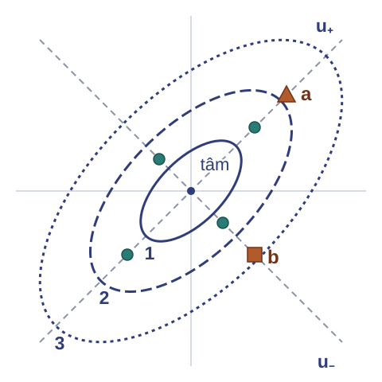

2. Mô hình thống kê và hàm hợp lýMuốn chọn tham số phù hợp với dữ liệu, cần viết xác suất của dữ liệu thành hàm của tham số rồi tối ưu.
Mô hình thống kê · Mẫu i.i.d. · Hàm hợp lý · Rủi ro thực nghiệm
Phần này kế thừa các họ phân phối của Bài 10 và khung dữ liệu, mô hình của trang ngữ cảnh. Nhiệm vụ: nêu rõ dữ liệu được sinh ra thế nào, viết xác suất của cả bộ dữ liệu thành hàm của tham số, rồi đổi bài toán cực đại thành cực tiểu một trung bình mất mát. Kết quả giao cho các phần sau là bài toán cực tiểu rủi ro thực nghiệm $\hat R_n(\theta)=-\frac1n\sum_i\log p_\theta(x_i)$.
Tham số chưa biết của dây chuyền
Nhu cầu: xác định tham số của mô hình dây chuyền bằng một bài toán tối ưu theo $\theta$.
Nhắc lại: $\operatorname{Bernoulli}(p)$: $\mathbb P(X=1)=p$; $\operatorname{Cat}(\boldsymbol\pi)$: $\mathbb P(X=k)=\pi_k$; $\mathcal N(\mu,\sigma^2)$, $\mathcal N(\mu,\Sigma)$.
Trực quan. Mỗi giá trị tham số cho một phân phối trên các bộ dữ liệu có thể.
Chọn giá trị làm dữ liệu đã thấy có khả năng xảy ra cao nhất.
Các tham số $p$, $\boldsymbol\pi$, $\mu$, $\sigma^2$, $\Sigma$ cố định nhưng chưa biết, và dữ liệu là căn cứ duy nhất để xác định chúng.
Bài 10 cập nhật xác suất sản phẩm lỗi khi tỉ lệ lỗi và độ nhạy của cảm biến đã cho trước (Định lý 10.11). Các tham số $\mu_y,\sigma_y^2$ của mô hình $T\mid Y=y\sim\mathcal N(\mu_y,\sigma_y^2)$ cho số đo liên tục cũng chưa biết.
Trong bài này, $\theta$ là ký hiệu chung cho tham số của mô hình, nên tham số Bernoulli được viết là $p$. Vector xác suất phân loại viết đậm $\boldsymbol\pi$ để phân biệt với hằng số $\pi$ trong mật độ Gaussian.
Để câu trực quan thành một tiêu chuẩn tính được, cần nói rõ xác suất của cả bộ dữ liệu được tính từ phân phối của từng quan sát thế nào. Ví dụ sau cho thấy điều đó phụ thuộc cơ chế lấy mẫu.
Nguồn: ghi chú bài giảng, phần mở đầu và mục 4; Murphy (2022), §4.1.
Ví dụ: sáu cờ cảnh báo dưới hai cơ chế lấy mẫu
Sáu cờ $D=(1,0,1,1,0,0)$; mỗi $X_i\sim\operatorname{Bernoulli}(p)$.
Tính xác suất của $D$ dưới hai cơ chế.
Sáu sản phẩm lấy độc lập: $p\,(1-p)\,p\,p\,(1-p)\,(1-p)=p^3(1-p)^3$.
Một cờ $Z$ chép sáu lần, $X_1=\cdots=X_6=Z$: mọi chuỗi có cả $0$ lẫn $1$ có xác suất $0$.
Hai cơ chế cùng phân phối biên $\mathbb P(X_i=1)=p$.
Diễn giải: xác suất của dữ liệu do phân phối đồng thời quyết định, phụ thuộc cơ chế lấy mẫu.
Cơ chế thứ hai: thiết bị đọc một cờ $Z\sim\operatorname{Bernoulli}(p)$ rồi ghi $X_1=\cdots=X_6=Z$. Chuỗi $D$ có cả số $0$ lẫn số $1$ nên không thể xảy ra.
Trung bình mẫu $\bar x=1/2$ như nhau dưới hai cơ chế, nên nó không cho biết giả thiết nào đúng; giả thiết độc lập phải dựa vào quy trình thu thập dữ liệu. Trước khi lấy mẫu, $\bar X$ là biến ngẫu nhiên; sau khi quan sát, $\bar x$ là một số.
Nguồn: ghi chú bài giảng, Ví dụ 11.1; Murphy (2022), §4.2.1, (4.3).
Mô hình thống kê, mẫu và bộ ước lượng
Định nghĩa. Mô hình thống kê tham số (parametric statistical model) là họ $\{P_\theta:\theta\in\Theta\}$, $P_\theta$ có hàm khối hoặc mật độ $p_\theta$.
Mẫu i.i.d. cỡ $n$ là $X_1,\ldots,X_n$ độc lập, cùng phân phối $P_\theta$; dữ liệu $D=(x_1,\ldots,x_n)$ là giá trị quan sát.
Thống kê (statistic) là hàm $T(X_1,\ldots,X_n)$ không chứa $\theta$.
Dùng $T$ ước lượng $\theta$ thì gọi $T$ là bộ ước lượng (estimator), $T(x_1,\ldots,x_n)$ là giá trị ước lượng (estimate).
Không gian quan sát $\mathcal X$ là một tập hữu hạn hoặc $\mathbb R^d$. Khi mỗi $X_i$ có hàm khối hoặc mật độ $p_\theta$, tính độc lập tương đương với việc hàm khối hoặc mật độ đồng thời tại $(x_1,\ldots,x_n)$ bằng $\prod_ip_\theta(x_i)$; đây là chỗ hàm hợp lý dùng giả thiết độc lập.
Tham số cố định nhưng chưa biết; $X_i$ và $T(X_1,\ldots,X_n)$ là ngẫu nhiên; $x_i$ và $T(x_1,\ldots,x_n)$ là số. Phân phối của $T$ qua các lần lấy mẫu lặp lại gọi là phân phối mẫu (sampling distribution). Nếu $g$ đo được thì $g(X_1),\ldots,g(X_n)$ cũng độc lập.
Nguồn: ghi chú bài giảng, Định nghĩa 11.1; Murphy (2022), §4.1, §4.2.1, §4.7.1.
Ví dụ: so sánh hai giá trị tham số trên sáu cờ
Nhu cầu: so sánh hai giá trị của $p$ khi dữ liệu đã cố định.
Trực quan. Giữ $D$ cố định, xem xác suất của $D$ là hàm của $p$.
Sáu cờ $D=(1,0,1,1,0,0)$ lấy độc lập; xác suất của $D$ là $p^3(1-p)^3$.
$$\begin{aligned}p=1/2:&\quad(1/2)^6=1/64\approx0{,}0156,\\ p=0{,}3:&\quad0{,}3^3\cdot0{,}7^3=0{,}009261\approx0{,}0093.\end{aligned}$$
Tỉ số: $0{,}015625/0{,}009261\approx1{,}69$.
Diễn giải: theo xác suất của $D$, $p=1/2$ phù hợp với $D$ hơn $p=0{,}3$.
Chuỗi ba cờ trong sáu sản phẩm có khả năng xảy ra dưới $p=1/2$ cao gấp khoảng $1{,}69$ lần so với dưới $p=0{,}3$.
Hàm $p^3(1-p)^3$ không đổi khi thay $p$ bằng $1-p$, nên $p=0{,}7$ cũng cho $0{,}009261$.
Hàm $p\mapsto p^3(1-p)^3$ là hàm hợp lý của sáu cờ; định nghĩa của hàm hợp lý viết nó cho một mô hình bất kỳ.
Nguồn: ghi chú bài giảng, Ví dụ 11.2.
Hàm hợp lý và ước lượng hợp lý cực đại
Định nghĩa. Với dữ liệu $D$ của mẫu i.i.d., hàm hợp lý (likelihood) và log-hợp lý (log-likelihood) là
$$\begin{aligned}L(\theta;D)&=\prod_{i=1}^np_\theta(x_i),\\ \ell(\theta;D)&=\sum_{i=1}^n\log p_\theta(x_i),\qquad\theta\in\Theta,\end{aligned}$$
với quy ước $\log0=-\infty$. Một ước lượng hợp lý cực đại là một phần tử của tập $\operatorname{argmax}_{\theta\in\Theta}L(\theta;D)$.
Tập này có thể rỗng hoặc nhiều phần tử.
Ý nghĩa: $L(\theta;D)$ là xác suất hoặc mật độ của $D$ dưới tham số $\theta$, với $D$ cố định.
Cùng biểu thức $\prod_ip_\theta(x_i)$: khi $\theta$ cố định và dữ liệu thay đổi, đó là hàm khối hoặc mật độ đồng thời của mẫu; khi $D$ cố định và $\theta$ thay đổi, đó là hàm hợp lý. Dạng tích dùng giả thiết độc lập; với cờ chép sáu lần ở ví dụ trước, dạng tích sai. Với dữ liệu liên tục, $L$ là tích các giá trị mật độ.
Ký hiệu $\hat\theta_{\mathrm{MLE}}$ chỉ dùng khi tập argmax có đúng một phần tử.
Hàm hợp lý so sánh xác suất của dữ liệu dưới từng giá trị tham số. Phát biểu về xác suất của chính tham số cần thêm một mật độ tiên nghiệm $q(\theta)$, cho hậu nghiệm $q(\theta\mid D)\propto L(\theta;D)\,q(\theta)$; với tiên nghiệm đều, điểm lớn nhất của hậu nghiệm trùng ước lượng hợp lý cực đại.
Nguồn: ghi chú bài giảng, Định nghĩa 11.2; Murphy (2022), §4.2.1, (4.2)–(4.4); §4.2.2, (4.9).
Hợp lý cực đại và rủi ro thực nghiệm
Nhu cầu: đổi tích hợp lý thành trung bình mất mát cần cực tiểu.
Trực quan. $\log$ biến tích thành tổng và giữ thứ tự; đổi dấu biến cực đại thành cực tiểu.
Mệnh đề. Với mẫu i.i.d. $D$, $n\ge1$, ba tập nghiệm bằng nhau:
$$\begin{aligned}&\underset{\theta\in\Theta}{\operatorname{argmax}}\,L(\theta;D)=\underset{\theta\in\Theta}{\operatorname{argmax}}\,\ell(\theta;D)=\underset{\theta\in\Theta}{\operatorname{argmin}}\,\hat R_n(\theta),\\ &\hat R_n(\theta)=-\frac1n\sum_{i=1}^n\log p_\theta(x_i).\end{aligned}$$
$\hat R_n$ là rủi ro thực nghiệm (empirical risk) với mất mát âm log-hợp lý (negative log-likelihood, NLL) $-\log p_\theta(x)$.
Với nhiều quan sát, log đổi tích thành tổng, và học máy làm việc với trung bình của các mất mát. Mệnh đề nói hai phép đổi, lấy log rồi nhân với $-1/n$, không đổi tập nghiệm.
$\hat R_n$ là rủi ro thực nghiệm của Định nghĩa 05c.51 với mất mát $-\log p_\theta(x)$ cho mỗi quan sát. Với mật độ, mất mát này âm khi $p_\theta(x)>1$, nhưng phép tương đương không dùng dấu của mất mát. Mỗi giả thiết phân phối cho một mất mát riêng, nên đổi giả thiết thì đổi mất mát.
Mệnh đề chỉ nói về dữ liệu đã thấy; nó không cho biết tham số tìm được dự đoán tốt đến đâu trên quan sát mới.
Nguồn: ghi chú bài giảng, Mệnh đề 11.3; Murphy (2022), §4.2.1, (4.4)–(4.7); §4.3, (4.60). Murphy gọi tổng (không chia $n$) là NLL.
Chứng minh: hợp lý cực đại và rủi ro thực nghiệm
Log giữ thứ tự các giá trị hợp lý; nhân với số âm đảo thứ tự.
$L$ và $\ell$ cùng điểm cực đại. $\log$ tăng chặt trên $(0,\infty)$; $\log0=-\infty$ nhỏ hơn mọi số thực:
$$L(\theta;D)\ge L(\theta';D)\iff\ell(\theta;D)\ge\ell(\theta';D),$$
vì $\log L(\theta;D)=\ell(\theta;D)$.
$\ell$ và $\hat R_n$ đảo thứ tự. $\hat R_n(\theta)=-\ell(\theta;D)/n$; nhân với $-1/n<0$ đảo chiều mọi bất đẳng thức.
Giả thiết i.i.d. cho dạng tích $L=\prod_ip_\theta(x_i)$, nên $\ell$ là tổng theo từng quan sát.
Log của một tích bằng tổng các log. Nếu một thừa số bằng $0$ thì cả $\log L$ và $\ell$ bằng $-\infty$, nên đẳng thức $\log L=\ell$ vẫn đúng với quy ước $\log0=-\infty$.
Nguồn: ghi chú bài giảng, chứng minh Mệnh đề 11.3.
Bài tập: bài toán tối ưu của ước lượng hợp lý cực đại
Câu hỏi: Cho dữ liệu $D$ của mẫu i.i.d. dưới mô hình $\{p_\theta:\theta\in\Theta\}$.
(a) Viết ước lượng hợp lý cực đại thành bài toán cực tiểu trung bình mất mát.
(b) Chỉ ra bước cần giả thiết độc lập.
Lời giải: (a) cực tiểu rủi ro thực nghiệm $\hat R_n(\theta)=-\frac1n\sum_i\log p_\theta(x_i)$ trên $\Theta$.
(b) Bước viết $L=\prod_ip_\theta(x_i)$; với cờ chép sáu lần, dạng tích sai.
Khi các quan sát là bản chép của nhau, xác suất của dữ liệu không còn là tích, và mục tiêu không còn là tổng trên từng quan sát.
Nguồn: ghi chú bài giảng, mục 11, câu 1.
3. Ước lượng xác suất từ số đếmMuốn ước lượng xác suất từ số đếm, cần cực đại hợp lý với ràng buộc tổng bằng một, kể cả số đếm bằng không.
Bernoulli · Nghiệm biên · Đơn hình xác suất · Nhân tử Lagrange · Entropy chéo
Phần này kế thừa bài toán cực tiểu rủi ro thực nghiệm của phần 2. Nguyên lý đó không tự cho công thức nghiệm. Bài toán thứ nhất có một tham số trên đoạn đóng $[0,1]$, nơi cực đại có thể nằm ở đầu mút. Bài toán thứ hai có ba xác suất chịu ràng buộc tổng bằng $1$, giải bằng nhân tử Lagrange. Kết quả giao cho các phần sau: hai công thức tần suất, entropy chéo và bất đẳng thức $\log t\le t-1$.
Mười cờ cảnh báo
Nhu cầu: ước lượng xác suất từ số đếm, với hai nhóm rồi với nhiều nhóm.
Mười cờ $(1,0,1,1,0,1,1,0,1,1)$ có $s=7$; chứng minh $7/10$ cực đại hợp lý.
Mẫu toàn $0$ hoặc toàn $1$ xét riêng: hàm hợp lý không có điểm dừng trong $(0,1)$.
Trực quan. Tăng $p$ lợi cho các số $1$, hại cho các số $0$; nghiệm cân bằng hai tác động.
$$\begin{aligned}L(p;D)&=p^s(1-p)^{n-s},\\ \ell(p;D)&=s\log p+(n-s)\log(1-p),\end{aligned}\qquad s=\sum_{i=1}^nx_i,\ p\in[0,1].$$
Mỗi cờ có $\mathbb P(X=x)=p^x(1-p)^{1-x}$, $x\in\{0,1\}$, với quy ước $0^0=1$; nhân theo dạng tích của hàm hợp lý được hai công thức trên trang. Số hạng có hệ số $0$ được hiểu bằng $0$. Hàm hợp lý chỉ phụ thuộc dữ liệu qua $s$; một đại lượng như vậy gọi là thống kê đủ (sufficient statistic).
$L$ là xác suất của chuỗi có thứ tự. Nếu chỉ quan sát tổng $s$, xác suất có thêm hệ số $\binom ns$ không phụ thuộc $p$, nên tập nghiệm không đổi.
Khi chỉ một trong hai giá trị xuất hiện, chỉ một tác động có mặt, nên mẫu toàn $0$ hoặc toàn $1$ cần xét riêng.
Nguồn: ghi chú bài giảng, mục 5.1, (5.1); Murphy (2022), §4.2.3, (4.20)–(4.22).
Ước lượng Bernoulli
Định lý. Giả thiết: $x_1,\ldots,x_n\in\{0,1\}$, $n\ge1$, mẫu i.i.d. Bernoulli$(p)$, $s=\sum_ix_i$; miền $p\in[0,1]$.
Kết luận: hàm hợp lý $L(p;D)=p^s(1-p)^{n-s}$ có đúng một điểm cực đại trên $[0,1]$:
$$\hat p_{\mathrm{MLE}}=\frac sn=\bar x.$$
Nghiệm thuộc $(0,1)$ khi $0<s<n$, bằng $0$ khi $s=0$, bằng $1$ khi $s=n$.
Ý nghĩa: tần suất mẫu là nghiệm cả khi $s=0$ hoặc $s=n$, nhờ miền đóng.
Định lý dùng hai giả thiết. Giả thiết i.i.d. cho dạng tích $L(p;D)=p^s(1-p)^{n-s}$. Miền đóng $[0,1]$ bảo đảm nghiệm tồn tại khi $s\in\{0,n\}$.
Murphy chỉ giải phương trình đạo hàm bằng $0$, không xét đầu mút. Chứng minh ở đây xét ba trường hợp theo $s$.
Nguồn: ghi chú bài giảng, Định lý 11.4; Murphy (2022), §4.2.3, (4.23)–(4.25).
Chứng minh: ước lượng Bernoulli, nghiệm trong
Trường hợp $0<s<n$: xét dấu $\ell'$ trên $(0,1)$, rồi so với hai đầu mút.
$\ell$ tăng rồi giảm. Trên $(0,1)$:
$$\begin{aligned}\ell'(p)&=\frac sp-\frac{n-s}{1-p}\\ &=\frac{s(1-p)-(n-s)p}{p(1-p)}=\frac{s-np}{p(1-p)}.\end{aligned}$$
Do $p(1-p)>0$: $\ell'>0$ khi $p<s/n$, $\ell'<0$ khi $p>s/n$; $s/n$ là cực đại duy nhất trên $(0,1)$.
Hai đầu mút có hợp lý $0$. $s\ge1$ cho $L(0;D)=0$; $n-s\ge1$ cho $L(1;D)=0$; cả hai nhỏ hơn $L(s/n;D)$.
$\ell$ tăng chặt trên $(0,s/n]$ và giảm chặt trên $[s/n,1)$.
Bước đầu mút dùng giả thiết $0<s<n$: cả hai thừa số $p^s$ và $(1-p)^{n-s}$ có số mũ dương, nên hàm hợp lý bằng $0$ ở hai đầu mút.
Nguồn: ghi chú bài giảng, chứng minh Định lý 11.4, Bước 1–2.
Chứng minh: ước lượng Bernoulli, nghiệm biên
Trường hợp $s\in\{0,n\}$: hợp lý đơn điệu.
$s=0$: hợp lý giảm chặt. $L(p;D)=(1-p)^n$, $n\ge1$; cực đại duy nhất tại $p=0=s/n$.
$s=n$: hợp lý tăng chặt. $L(p;D)=p^n$; cực đại duy nhất tại $p=1=s/n$.
Hai bước dùng đầu mút $0$ và $1$ của miền đóng $[0,1]$.
Lưu ý: trên $(0,1)$, mẫu toàn $0$ có cận trên $1$ của hợp lý không đạt được, nên không có nghiệm.
Nghiệm $\hat p=0$ chỉ nói dữ liệu đã thấy có hợp lý lớn nhất khi $p=0$. Xác suất thật vẫn có thể dương: với mọi $0<p<1$, xác suất quan sát $n$ số $0$ là $(1-p)^n>0$. Mô hình đã khớp gán xác suất $0$ cho mọi cờ bằng $1$ về sau; Murphy xem đây là một dạng quá khớp (overfitting) và gọi nó là bài toán số đếm bằng không (zero-count problem).
Một cách tránh nghiệm $\hat p=0$ là thêm tiên nghiệm Beta cho $p$; đó là một phương pháp ước lượng khác (ghi chú bài giảng, mục 5.2).
Nguồn: ghi chú bài giảng, chứng minh Định lý 11.4, Bước 3–4; Nhận xét 11.5; Murphy (2022), §4.5, §4.5.1, §4.6.2.
Ví dụ: mười cờ cảnh báo
Mười cờ $(1,0,1,1,0,1,1,0,1,1)$ của mười sản phẩm lấy độc lập; mô hình i.i.d. Bernoulli$(p)$.
Tính $\hat p$; so với $p=1/2$.
$s=7$, $n=10$, $0<s<n$: $\hat p=7/10=0{,}7$.
$$\begin{aligned}L(1/2;D)&=1/1024\approx0{,}000977,\\ L(0{,}7;D)&=0{,}7^7\cdot0{,}3^3\approx0{,}002224,\\ L(0{,}7;D)/L(1/2;D)&\approx2{,}28.\end{aligned}$$
Dự đoán thế tham số (plug-in prediction): theo mô hình đã khớp, cờ tiếp theo bằng $1$ với xác suất $0{,}7$.
Diễn giải: $0{,}7$ là giá trị phù hợp nhất với mười cờ đã thấy.
Kiểm tra lại bằng bước đầu của chứng minh: $\ell'(p)=(7-10p)/[p(1-p)]$ dương khi $p<0{,}7$, bằng $0$ tại $p=0{,}7$ và âm khi $p>0{,}7$. Tỉ số hai hợp lý là $2^{10}\cdot0{,}7^7\cdot0{,}3^3\approx2{,}277$.
Dự đoán thế tham số thay $\hat p$ vào mô hình để tính xác suất của quan sát mới. Xác suất gắn cờ thật của dây chuyền có thể khác $0{,}7$.
Nguồn: ghi chú bài giảng, Ví dụ 11.3; Murphy (2022), §4.2.3.
Entropy chéo nhị phân
Nhu cầu: hàm mất mát cho nhãn nhị phân khi mọi quan sát dùng chung một xác suất $p$.
Chia $-\ell(p;D)$ cho $n$:
$$\hat R_n(p)=-\frac1n\sum_{i=1}^n\bigl[x_i\log p+(1-x_i)\log(1-p)\bigr].$$
Hàm này gọi là entropy chéo nhị phân (binary cross-entropy, log loss).
Cực tiểu $\hat R_n$ tương đương cực đại hợp lý, nên nghiệm là $\hat p=s/n$ của định lý ước lượng Bernoulli.
Đây là cách học xác suất của một nhãn nhị phân khi chưa dùng đặc trưng đầu vào. Entropy chéo nhị phân là mất mát log của bài toán phân loại nhị phân có đầu ra xác suất (Murphy (2022), §4.3.2).
Mệnh đề 11.3 của ghi chú bài giảng đổi bài toán cực đại hợp lý thành cực tiểu mất mát này, nên hai bài toán có cùng nghiệm; định lý ước lượng Bernoulli cho nghiệm đó.
Nguồn: ghi chú bài giảng, mục 5.1; Murphy (2022), §4.2.3, §4.3.
Bài tập: nghiệm trong và nghiệm biên (a)
Câu hỏi: $8$ cờ của $8$ sản phẩm lấy độc lập, có $2$ cờ bằng $1$; mô hình i.i.d. Bernoulli$(p)$, $p\in[0,1]$.
(a) Viết log-hợp lý, tìm ước lượng hợp lý cực đại, chứng minh đó là cực đại trên $[0,1]$.
(b) Thay bằng tám cờ đều bằng $0$: tìm nghiệm trên $[0,1]$; xét sự tồn tại nghiệm trên $(0,1)$.
Lời giải: (a) $\ell(p)=2\log p+6\log(1-p)$ và
$$\ell'(p)=\frac{2-8p}{p(1-p)}.$$
$\ell'>0$ khi $p<1/4$, $\ell'<0$ khi $p>1/4$; $L(0)=L(1)=0<L(1/4)$, nên $\hat p=1/4=s/n$.
Gợi ý: tính $\ell'(p)$ trên $(0,1)$, xét dấu, rồi so với giá trị của $L$ ở hai đầu mút.
Chi tiết: $\ell'(p)=2/p-6/(1-p)=[2(1-p)-6p]/[p(1-p)]$. Kiểm tra lại: tại $p=1/4$, tử số $2-8p$ bằng $0$.
Nguồn: tệp bài tập Bài 11, Bài tập 11.1.
Bài tập: nghiệm trong và nghiệm biên (b)
Câu hỏi: (b) tám cờ đều bằng $0$; nghiệm trên $[0,1]$ và trên $(0,1)$.
Lời giải: $L(p)=(1-p)^8$ giảm chặt trên $[0,1]$, nên $\hat p=0$ trên $[0,1]$.
Trên $(0,1)$: với mỗi $p$ có $p'\in(0,p)$ cho $L(p')>L(p)$.
$L\to1$ khi $p\downarrow0$ nhưng không đạt; không tồn tại ước lượng hợp lý cực đại trên $(0,1)$.
Lưu ý: $\ell'(p)=0$ vô nghiệm trên $(0,1)$; nghiệm trên $[0,1]$ nằm ở đầu mút $p=0$.
Gợi ý: phương trình $\ell'(p)=0$ không có nghiệm trong $(0,1)$; xét trực tiếp tính đơn điệu của $(1-p)^8$.
Một lỗi thường gặp là giải $\ell'(p)=0$, không thấy nghiệm, rồi kết luận không có nghiệm trên $[0,1]$. Câu (b) là trường hợp $n=8$ của hiện tượng miền mở đã nêu ở chứng minh nghiệm biên.
Nguồn: tệp bài tập Bài 11, Bài tập 11.1; ghi chú bài giảng, Nhận xét 11.5.
Ba chế độ tải
Nhu cầu: ước lượng ba xác suất chế độ tải từ số đếm $(2,3,5)$ của mười bản ghi.
Hàm hợp lý là $\pi_1^2\pi_2^3\pi_3^5$; cực đại từng thừa số đẩy mỗi $\pi_k$ tới $1$, và kết quả không còn là phân phối.
Ràng buộc: $\pi_1+\pi_2+\pi_3=1$, $\pi_k\ge0$.
Trực quan. Tổng khối lượng xác suất bằng $1$ chia cho ba nhóm; tăng một nhóm thì bớt nhóm khác.
Ba chế độ tải là thấp, trung bình, cao. Các tần suất $(0{,}2;\ 0{,}3;\ 0{,}5)$ là ứng viên tự nhiên. Còn hai câu hỏi: cách chia nào cho hợp lý lớn nhất, và nhóm có số đếm bằng $0$ nhận bao nhiêu.
Với hai nhóm, bài toán trở lại mô hình Bernoulli, ràng buộc chỉ để lại một bậc tự do; với ba nhóm trở lên, ràng buộc tổng liên kết mọi tọa độ cùng lúc.
Nguồn: ghi chú bài giảng, mục 6; Murphy (2022), §4.2.4.
Đơn hình xác suất và hàm hợp lý phân loại
Định nghĩa. Với $K\ge2$ nhóm, đơn hình xác suất (probability simplex) là tập
$$\Delta_{K-1}=\Bigl\{\boldsymbol\pi\in\mathbb R^K:\ \pi_k\ge0,\ \sum_{k=1}^K\pi_k=1\Bigr\}.$$
Với dữ liệu $D$ của mẫu i.i.d. $\operatorname{Cat}(\boldsymbol\pi)$, $\mathbb P(X=k)=\pi_k$, số đếm của nhóm $k$ là $n_k=\sum_i\mathbf 1[x_i=k]$; $\sum_kn_k=n$.
Hàm hợp lý phân loại trên $\Delta_{K-1}$, quy ước $\pi_k^0=1$:
$$L(\boldsymbol\pi;D)=\prod_{k=1}^K\pi_k^{n_k},\qquad\ell(\boldsymbol\pi;D)=\sum_{k:\,n_k>0}n_k\log\pi_k.$$
Mỗi quan sát $x_i=k$ góp một thừa số $\pi_k$; nhóm $k$ góp $n_k$ thừa số như vậy, nên hàm hợp lý phân loại suy từ dạng tích $\prod_ip_\theta(x_i)$, và các số đếm là thống kê đủ.
Các xác suất trong $\Delta_{K-1}$ mô tả một biến nhận đúng một trong $K$ giá trị. Chúng khác $K$ tham số Bernoulli của $K$ chỉ báo có thể đồng thời bằng $1$: các tham số đó không chịu ràng buộc tổng bằng $1$.
Nguồn: ghi chú bài giảng, Định nghĩa 11.6 (vector xác suất viết $\pi$, không đậm); Murphy (2022), §4.2.4, (4.26); §4.6.3.2.
Ước lượng phân loại
Định lý. Giả thiết: $n\ge1$ quan sát của mẫu i.i.d. $\operatorname{Cat}(\boldsymbol\pi)$, số đếm $n_1,\ldots,n_K$; miền $\Delta_{K-1}$ đóng, cho phép $\pi_k=0$.
Kết luận: hàm hợp lý phân loại có đúng một điểm cực đại trên $\Delta_{K-1}$:
$$\hat\pi_k=\frac{n_k}n,\qquad k=1,\ldots,K.$$
Nhóm chưa xuất hiện ($n_k=0$) nhận $\hat\pi_k=0$.
Ý nghĩa: dành khối lượng cho nhóm chưa thấy làm giảm hợp lý.
Với hai nhóm và $\boldsymbol\pi=(1-p,p)$, công thức $\hat\pi_k=n_k/n$ cho $\hat p=n_2/n$, đúng công thức Bernoulli.
Miền đóng quyết định sự tồn tại nghiệm: nếu đòi mọi $\pi_k>0$ mà có $n_k=0$, cận trên của hợp lý không đạt được.
Chứng minh dùng nhân tử Lagrange để tìm ứng viên, rồi bất đẳng thức $\log t\le t-1$ để chứng minh ứng viên là cực đại toàn cục.
Nguồn: ghi chú bài giảng, Định lý 11.7; Murphy (2022), §4.2.4, (4.27)–(4.31).
Chứng minh: ước lượng phân loại, ứng viên
Lagrange tìm ứng viên; $\log t\le t-1$ chứng minh cực đại toàn cục.
Nhắc lại: hàm Lagrange cộng vào hàm mục tiêu tích của nhân tử $\nu$ với ràng buộc đẳng thức; điểm dừng: $\nabla_{\boldsymbol\pi}\mathcal L=0$.
Hợp lý dương cần $\pi_k>0$ trên $\mathcal K_+=\{k:n_k>0\}$. Cực tiểu $F=-\sum_{k\in\mathcal K_+}n_k\log\pi_k$ với $\sum_{k\in\mathcal K_+}\pi_k=1$ (đặt $\pi_k=0$ ngoài $\mathcal K_+$; bước sau so với mọi điểm):
$$\mathcal L=-\sum_{k\in\mathcal K_+}n_k\log\pi_k+\nu\Bigl(\sum_{k\in\mathcal K_+}\pi_k-1\Bigr).$$
Điều kiện dừng cho $\pi_k=n_k/\nu$. Từ $-n_k/\pi_k+\nu=0$.
Ràng buộc cho $\nu=n$. Thế vào: $1=\sum_{k\in\mathcal K_+}n_k/\nu=n/\nu$; ứng viên $\hat\pi_k=n_k/n$.
Điều kiện dừng chỉ là điều kiện cần. Nhóm có $n_k=0$ không có số hạng $n_k\log\pi_k$, nên điều kiện dừng $n_k/\pi_k=\nu$ không viết được tại $\pi_k=0$, vì nó thành phép chia $0/0$; nhóm đó được xử lý ở bước so sánh với mọi điểm của đơn hình.
Tổng các tọa độ thuộc $\mathcal K_+$ của ứng viên đã bằng $1$, nên các tọa độ còn lại phải bằng $0$ để ứng viên thuộc $\Delta_{K-1}$.
Nguồn: ghi chú bài giảng, chứng minh Định lý 11.7, Bước 1; Murphy (2022), §4.2.4, (4.27)–(4.31). Murphy viết $-\lambda(1-\sum_k\theta_k)$.
Chứng minh: ước lượng phân loại, cực đại toàn cục
Nhắc lại: $\log t\le t-1$ với $t>0$, dấu bằng khi và chỉ khi $t=1$.
$\ell(\boldsymbol\pi)\le\ell(\hat{\boldsymbol\pi})$ trên $\Delta_{K-1}$. Nếu $\pi_k=0$ với một $k\in\mathcal K_+$ thì $L(\boldsymbol\pi;D)=0$; ngược lại:
$$\begin{aligned}&\ell(\boldsymbol\pi;D)-\ell(\hat{\boldsymbol\pi};D)\\ &=\sum_{k\in\mathcal K_+}n_k\log\frac{\pi_k}{\hat\pi_k}\\ &\le\sum_{k\in\mathcal K_+}n_k\Bigl(\frac{\pi_k}{\hat\pi_k}-1\Bigr)\\ &=n\Bigl(\sum_{k\in\mathcal K_+}\pi_k-1\Bigr)\le0.\end{aligned}$$
Do $n_k/\hat\pi_k=n$, $\sum_{k\in\mathcal K_+}n_k=n$ và $\sum_{k\in\mathcal K_+}\pi_k\le1$.
Dấu bằng chỉ tại $\hat{\boldsymbol\pi}$. Cần $\pi_k=\hat\pi_k$ trên $\mathcal K_+$ và $\pi_k=0$ ngoài $\mathcal K_+$.
Bất đẳng thức thứ nhất dùng $\log t\le t-1$ với $t=\pi_k/\hat\pi_k>0$. Đẳng thức tiếp theo dùng $n_k/\hat\pi_k=n$ và $\sum_{k\in\mathcal K_+}n_k=n$. Bất đẳng thức cuối dùng $\sum_{k\in\mathcal K_+}\pi_k\le\sum_k\pi_k=1$.
Dấu bằng ở bất đẳng thức thứ nhất cần mọi $t=1$, tức $\pi_k=\hat\pi_k$ trên $\mathcal K_+$; ở bất đẳng thức cuối cần $\boldsymbol\pi$ không đặt khối lượng ngoài $\mathcal K_+$. Hai điều kiện cùng cho $\boldsymbol\pi=\hat{\boldsymbol\pi}$.
Cùng bất đẳng thức cho tính không âm của phân kỳ Kullback–Leibler (Kullback–Leibler divergence, KL); đó là một chứng minh thứ hai của định lý (ghi chú bài giảng, mục 6.2).
Nguồn: ghi chú bài giảng, chứng minh Định lý 11.7, Bước 2–3; Murphy (2022), §6.2.
Ví dụ: ba chế độ tải trong mười bản ghi
Mười bản ghi lấy độc lập, số đếm $(n_1,n_2,n_3)=(2,3,5)$; mô hình i.i.d. $\operatorname{Cat}(\boldsymbol\pi)$ trên $\Delta_2$.
Tính $\hat{\boldsymbol\pi}$; mọi số đếm dương, $\mathcal K_+=\{1,2,3\}$, $n=10$.
$$\hat{\boldsymbol\pi}=\Bigl(\frac2{10},\frac3{10},\frac5{10}\Bigr)=(0{,}2;\ 0{,}3;\ 0{,}5).$$
Kiểm tra điều kiện dừng: $2/0{,}2=3/0{,}3=5/0{,}5=10=n$.
Chia âm log-hợp lý cho $n$ được entropy chéo nhiều lớp (categorical cross-entropy, log loss) $-\sum_k\frac{n_k}n\log\pi_k$.
Diễn giải: chế độ tải cao có xác suất ước lượng lớn nhất, $0{,}5$; ba xác suất có tổng bằng $1$.
Ba xác suất cùng mô tả một bản ghi có đúng một chế độ, nên tăng một xác suất buộc phải giảm các xác suất còn lại. Entropy chéo nhiều lớp là mất mát log của phân loại nhiều lớp; tổng chỉ chạy trên các nhóm có $n_k>0$.
Với số đếm $(3,0,7)$, định lý cho $(0{,}3;\ 0;\ 0{,}7)$, và mô hình đã khớp gán xác suất $0$ cho nhóm thứ hai về sau. Cộng thêm một vào mỗi số đếm (add-one smoothing) là ước lượng hậu nghiệm cực đại (maximum a posteriori, MAP) với tiên nghiệm Dirichlet$(2,2,2)$; khi chỉ có hai nhóm, tiên nghiệm này là Beta$(2,2)$. Ước lượng này khác nghiệm hợp lý cực đại ở trên.
Khi các xác suất được tính bằng một mô hình có tham số dùng chung cho nhiều đầu vào, các $\pi_k$ không chọn tự do được trên đơn hình, nên công thức tần suất chỉ áp dụng cho mô hình phân loại không có ràng buộc thêm.
Nguồn: ghi chú bài giảng, Ví dụ 11.4, Nhận xét 11.8; Murphy (2022), §4.2.4; §4.5.1, (4.95)–(4.96); §4.6.3.4.
Bài tập: Lagrange khi có nhóm vắng mặt (a)
Câu hỏi: số đếm $(n_1,n_2,n_3)=(4,0,6)$ trong $n=10$ quan sát i.i.d. $\operatorname{Cat}(\boldsymbol\pi)$, $\boldsymbol\pi\in\Delta_2$.
(a) Chứng minh mọi điểm cực đại có $\pi_2=0$, không dùng điều kiện dừng theo $\pi_2$.
(b) Dùng nhân tử Lagrange với $\pi_1+\pi_3=1$ tìm nghiệm; chứng minh đó là cực đại.
(c) Tính tỉ số hợp lý giữa nghiệm và $(0{,}3;\ 0{,}1;\ 0{,}6)$.
Lời giải: (a) $L=\pi_1^4\pi_3^6$; điểm cực đại có $L>0$, nên $\pi_1,\pi_3>0$.
Nếu $m=\pi_1+\pi_3<1$, đặt $\boldsymbol\pi'=(\pi_1/m,\ 0,\ \pi_3/m)$: $L(\boldsymbol\pi')=m^{-10}L(\boldsymbol\pi)>L(\boldsymbol\pi)$, nên $m=1$ và $\pi_2=0$.
Do $\pi_1,\pi_3>0$, $m\in(0,1]$. Gợi ý: chuẩn hóa hai tọa độ đã thấy lên tổng bằng $1$ và so sánh hai hàm hợp lý.
Câu (d) của đề: xác suất thế tham số để hai quan sát mới đều thuộc nhóm $3$ là $\hat\pi_3^2=0{,}36$. Phép tính dùng hai giả thiết: hai quan sát mới có phân phối $\operatorname{Cat}(\hat{\boldsymbol\pi})$ của mô hình đã khớp, và chúng độc lập với nhau.
Nguồn: tệp bài tập Bài 11, Bài tập 11.2.
Bài tập: Lagrange khi có nhóm vắng mặt (b), (c)
Câu hỏi: (b) Lagrange với $\pi_1+\pi_3=1$, chứng minh cực đại; (c) tỉ số hợp lý với $(0{,}3;\ 0{,}1;\ 0{,}6)$.
Lời giải: (b) với $\pi_2=0$: $\mathcal L=-4\log\pi_1-6\log\pi_3+\nu(\pi_1+\pi_3-1)$.
Điều kiện dừng $4/\pi_1=6/\pi_3=\nu$; ràng buộc cho $\nu=10$, $\hat{\boldsymbol\pi}=(0{,}4;\ 0;\ 0{,}6)$.
$F$ lồi trên tập mở $\{\pi_1>0,\pi_3>0\}$, nên điểm dừng là nghiệm khi $\pi_2=0$ (Mệnh đề 04.2(b)); cùng (a), $\hat{\boldsymbol\pi}$ cực đại trên $\Delta_2$.
$$\text{(c)}\quad\frac{L(\hat{\boldsymbol\pi})}{L(0{,}3;\,0{,}1;\,0{,}6)}=\frac{0{,}4^4}{0{,}3^4}=\frac{256}{81}\approx3{,}16.$$
Diễn giải: dành khối lượng $0{,}1$ cho nhóm vắng mặt làm hợp lý giảm hơn ba lần.
Ở đây $F(\pi_1,\pi_3)=-4\log\pi_1-6\log\pi_3$; $-\log$ lồi, ma trận ràng buộc $(1,1)$ có hàng khác $0$. Với mọi $\boldsymbol\pi$ có hợp lý dương: nếu $m<1$, câu (a) cho một điểm có $\pi_2=0$ và hợp lý lớn hơn; nếu $m=1$ thì $\pi_2=0$.
Ở câu (c), hai vector có cùng $\pi_3=0{,}6$, nên thừa số $0{,}6^6$ triệt tiêu. Kiểm tra lại: $4/0{,}4=6/0{,}6=10=n$.
Cách khác cho tính cực đại: bất đẳng thức $\log t\le t-1$ như chứng minh định lý ước lượng phân loại, với $\mathcal K_+=\{1,3\}$.
Nguồn: tệp bài tập Bài 11, Bài tập 11.2.
4. Gaussian một chiều và độ chệchMuốn ước lượng vị trí và độ phân tán của số đo liên tục, cần cực đại hợp lý Gaussian và chọn mẫu số.
Log-hợp lý Gaussian · Trung bình mẫu · Phương sai mẫu · Độ chệch · Mất mát bình phương
Phần này kế thừa bài toán cực tiểu rủi ro thực nghiệm và cách chứng minh hai bước của phần trước: tìm ứng viên, rồi chứng minh cực đại toàn cục. Hai mô hình của phần 3 dành cho biến rời rạc; số đo liên tục cần một mô hình mật độ; với mật độ Gaussian, phương sai nằm cả trong số mũ lẫn trong hệ số chuẩn hóa. Kết quả giao cho phần sau: $\hat\mu=\bar x$, $\hat\sigma^2=Q/n$, đẳng thức tách tâm, điều kiện $Q>0$, mất mát bình phương suy từ nhiễu Gaussian và lý do của mẫu số $n-1$.
Năm độ lệch nhiệt độ
Nhu cầu: ước lượng vị trí, mức dao động của $(0,1,2,3,4)$; xét tồn tại nghiệm, chọn mẫu số.
Nhắc lại: với $\mu\in\mathbb R$, $\sigma^2>0$, mật độ của $\mathcal N(\mu,\sigma^2)$ là
$$f_{\mu,\sigma^2}(x)=\frac1{\sqrt{2\pi\sigma^2}}\exp\Bigl[-\frac{(x-\mu)^2}{2\sigma^2}\Bigr],\qquad x\in\mathbb R.$$
Trực quan. Dịch $\mu$ về gần dữ liệu làm giảm tổng bình phương sai lệch.
Giảm $\sigma^2$ nâng mật độ quanh tâm, phạt nặng hơn các điểm xa tâm.
Một nhiệt kế đo độ lệch nhiệt độ của năm sản phẩm so với giá trị danh định. Mô hình giả thiết nhiễu Gaussian.
Phương sai xuất hiện cả trong số mũ lẫn trong hệ số chuẩn hóa $1/\sqrt{2\pi\sigma^2}$, nên không thể chỉ cực tiểu phần số mũ. Điểm cân bằng giữa hai tác động của $\sigma^2$ được xác định bằng dấu của đạo hàm trong chứng minh.
Nguồn: ghi chú bài giảng, mục 7; Murphy (2022), §4.2.5.
Log-hợp lý Gaussian
Đặt $v=\sigma^2$. Dữ liệu $D$ của mẫu i.i.d. $\mathcal N(\mu,v)$ cho log-hợp lý
$$\begin{aligned}\ell(\mu,v;D)&=-\frac n2\log(2\pi)-\frac n2\log v\\ &\quad-\frac1{2v}\sum_{i=1}^n(x_i-\mu)^2.\end{aligned}$$
Số hạng $-\frac n2\log v$ đến từ hệ số chuẩn hóa; số hạng cuối đến từ số mũ.
Ký hiệu: trung bình mẫu $\bar x=\frac1n\sum_ix_i$; tổng bình phương sai lệch $Q=\sum_i(x_i-\bar x)^2$.
Viết $v=\sigma^2$ để lấy đạo hàm trực tiếp theo phương sai. Log của mật độ một quan sát là $-\frac12\log(2\pi v)-(x-\mu)^2/(2v)$; cộng theo dạng tích của hàm hợp lý cho log-hợp lý Gaussian.
Nguồn: ghi chú bài giảng, (7.1); Murphy (2022), §4.2.5, (4.32)–(4.33).
Ước lượng Gaussian một chiều
Định lý. Giả thiết: $x_1,\ldots,x_n\in\mathbb R$, $n\ge1$, mẫu i.i.d. $\mathcal N(\mu,v)$; miền $\mu\in\mathbb R$, $v>0$.
Kết luận: nếu $Q>0$, log-hợp lý Gaussian có đúng một điểm cực đại
$$\hat\mu=\bar x,\qquad\hat\sigma^2_{\mathrm{MLE}}=\frac Qn.$$
Nếu $Q=0$, tức mọi $x_i$ bằng nhau, log-hợp lý không bị chặn trên; không có nghiệm với $v>0$.
Ý nghĩa: khi $Q>0$, trung bình mẫu và trung bình bình phương sai lệch là nghiệm duy nhất.
Cấu trúc giống định lý ước lượng Bernoulli: tham số tối ưu là một trung bình của dữ liệu, và có một trường hợp dữ liệu suy biến. Khác biệt nằm ở miền tham số: $[0,1]$ chứa hai đầu mút nên mô hình Bernoulli luôn có nghiệm, còn $v>0$ là tập mở.
Chứng minh tách tổng bình phương để thấy trung bình tối ưu không phụ thuộc phương sai, rồi tối ưu phương sai bằng dấu của đạo hàm.
Nguồn: ghi chú bài giảng, Định lý 11.9; Murphy (2022), §4.2.5, (4.34)–(4.38).
Chứng minh: Gaussian một chiều, trung bình tối ưu
Đẳng thức tách tâm cho trung bình tối ưu không phụ thuộc $v$; sau đó tối ưu $v$.
Tổng bình phương tách thành $Q+n(\mu-\bar x)^2$. Viết $x_i-\mu=(x_i-\bar x)+(\bar x-\mu)$; số hạng chéo bằng $0$ vì $\sum_i(x_i-\bar x)=0$:
$$\sum_{i=1}^n(x_i-\mu)^2=Q+2(\bar x-\mu)\sum_{i=1}^n(x_i-\bar x)+n(\bar x-\mu)^2=Q+n(\mu-\bar x)^2.$$
$\ell(\mu,v)\le\ell(\bar x,v)$ với mọi $v>0$. Thế đẳng thức tách tâm vào log-hợp lý Gaussian:
$$\ell(\mu,v;D)=-\frac n2\log(2\pi v)-\frac Q{2v}-\frac{n(\mu-\bar x)^2}{2v}.$$
Số hạng cuối $\le0$, bằng $0$ khi và chỉ khi $\mu=\bar x$.
Đẳng thức tách tâm đúng với mọi số thực $x_1,\ldots,x_n$ và mọi $\mu$. Nó được dùng lại cho biến ngẫu nhiên trong chứng minh hiệu chỉnh phương sai mẫu, và cho dạng toàn phương trong Gaussian nhiều chiều.
Với $v$ cố định, cực tiểu âm log-hợp lý theo $\mu$ là cực tiểu tổng bình phương sai lệch $\sum_i(x_i-\mu)^2$: đó là nguồn gốc xác suất của mất mát bình phương.
Nguồn: ghi chú bài giảng, chứng minh Định lý 11.9, Bước 1.
Chứng minh: Gaussian một chiều, phương sai tối ưu
$Q/n$ cực đại $\varphi(v)=-\frac n2\log v-\frac Q{2v}$. Đạo hàm:
$$\varphi'(v)=-\frac n{2v}+\frac Q{2v^2}=\frac{Q-nv}{2v^2}.$$
$\varphi'>0$ khi $v<Q/n$, $\varphi'<0$ khi $v>Q/n$; giả thiết $Q>0$ cho $Q/n$ thuộc miền $v>0$.
Cực đại duy nhất tại $(\bar x,Q/n)$. $\ell(\mu,v;D)\le\ell(\bar x,v;D)\le\ell(\bar x,Q/n;D)$; dấu bằng chỉ khi $\mu=\bar x$, $v=Q/n$.
$Q=0$: hợp lý không bị chặn. $\ell(\bar x,v;D)=-\frac n2\log(2\pi v)\to+\infty$ khi $v\downarrow0$; không điểm nào đạt cực đại.
Sau khi thế $\mu=\bar x$, $\ell(\bar x,v;D)=-\frac n2\log(2\pi)+\varphi(v)$. Hàm $\varphi$ tăng chặt trên $(0,Q/n]$ và giảm chặt trên $[Q/n,\infty)$.
Khi $Q=0$, với mọi $(\mu,v)$ có $v'>0$ đủ nhỏ cho $\ell(\bar x,v';D)>\ell(\mu,v;D)$.
Khi học cả $v$, số hạng $\frac n2\log v$ của âm log-hợp lý phải được giữ: bỏ nó, phần còn lại $Q/(2v)$ giảm về $0$ khi $v\to\infty$ và không có điểm cực tiểu.
Nguồn: ghi chú bài giảng, chứng minh Định lý 11.9, Bước 2–4.
Ví dụ: năm độ lệch nhiệt độ
$D=(0,1,2,3,4)$, năm sản phẩm lấy độc lập; mô hình i.i.d. $\mathcal N(\mu,v)$.
Tính $\hat\mu$, $\hat\sigma^2$; so log-hợp lý với $v=1$.
$\bar x=10/5=2$; sai lệch $(-2,-1,0,1,2)$, $Q=10>0$; $\hat\mu=2$, $\hat\sigma^2=10/5=2$.
$$\begin{aligned}\ell(2,2;D)&=-\tfrac52\log(4\pi)-\tfrac{10}4\approx-8{,}828,\\ \ell(2,1;D)&=-\tfrac52\log(2\pi)-\tfrac{10}2\approx-9{,}595.\end{aligned}$$
Diễn giải: $\mathcal N(2,1)$ cao hơn ở tâm nhưng kém khoảng $0{,}77$ log-hợp lý vì hai điểm $0$ và $4$ bị phạt nặng hơn.
Mật độ đã khớp là $\hat f(x)=\frac1{\sqrt{4\pi}}\exp[-(x-2)^2/4]$, với độ lệch chuẩn $\sqrt2\approx1{,}41$.
Kiểm tra lại: tổng các sai lệch bằng $0$, và $Q-n\hat\sigma^2=10-5\cdot2=0$; đó là hai điều kiện $\partial\ell/\partial\mu=0$ và $\partial\ell/\partial v=0$ tại $(\bar x,Q/n)$.
Nguồn: ghi chú bài giảng, Ví dụ 11.5.
Mất mát từ giả thiết nhiễu
Nhu cầu: chọn mất mát cho $\mu$ từ giả thiết về nhiễu $x_i=\mu+\varepsilon_i$, $\varepsilon_i$ độc lập.
Diễn giải: đổi giả thiết nhiễu thì đổi mất mát; số đo $9$ kéo trung bình lên $3$, trung vị ở lại $0$.
Mỗi mất mát là âm log-hợp lý, theo tương đương giữa hợp lý cực đại và rủi ro thực nghiệm, sau khi bỏ hằng số và hệ số dương. Với nhiễu Gaussian: $\frac n2\log(2\pi v)+\frac1{2v}\sum_i(x_i-\mu)^2$; với nhiễu Laplace: $\sum_i[\log(2\beta)+|x_i-\mu|/\beta]$.
Nghiệm Gaussian là $\bar x=(0+0+9)/3=3$, theo bước tách tâm. Với Laplace, $\psi(\mu)=2|\mu|+|9-\mu|$ bằng $9-3\mu$ khi $\mu<0$, $9+\mu$ khi $0\le\mu\le9$, $3\mu-9$ khi $\mu>9$, nên cực tiểu duy nhất tại $\mu=0$, $\psi(0)=9$. Kiểm tra: $\psi(3)=12>9$; với Gaussian, $81>54$.
Dưới mô hình Laplace, mật độ giảm theo $|\varepsilon|$ thay vì $\varepsilon^2$, nên số đo $9$ ít ảnh hưởng tới nghiệm hơn.
Nguồn: ghi chú bài giảng, Ví dụ 11.6; Murphy (2022), §2.7.3, (2.134)–(2.135).
Hai mẫu số của phương sai
Nhu cầu: đánh giá bộ ước lượng $Q_X/n$, $Q_X=\sum_i(X_i-\bar X)^2$, qua các lần lấy mẫu lặp lại.
Với $n=1$: $Q=0$, nên $Q/n=0$ với mọi dữ liệu.
Trực quan. Theo đẳng thức tách tâm, $\sum_i(x_i-\mu)^2=Q+n(\mu-\bar x)^2\ge Q$.
Tổng bình phương sai lệch quanh $\bar x$ không vượt tổng quanh $\mu$ thật, nên $Q_X/n$ có xu hướng nhỏ hơn $\sigma^2$.
Câu hỏi: Khi ước lượng phương sai, chia $Q$ cho $n$ hay cho $n-1$?
Bộ ước lượng $Q_X/n$ cho nghiệm hợp lý cực đại trên mỗi mẫu cố định. Với $n=1$ nó cho $0$ bất kể phương sai thật.
Để trả lời câu hỏi, cần đo hành vi của bộ ước lượng qua các lần lấy mẫu, tức kỳ vọng dưới phân phối của mô hình.
Nguồn: ghi chú bài giảng, mục 7.2; Murphy (2022), §4.7.6.1.
Độ chệch và tính không chệch
Nhắc lại: ước lượng $\hat\mu$ của $\mu$ là không chệch nếu $\mathbb E\hat\mu=\mu$.
Định nghĩa. Cho mô hình $\{P_\theta\}$, mẫu i.i.d. theo $P_\theta$, bộ ước lượng $T$ của $g(\theta)$, với $g:\Theta\to\mathbb R$ và $\mathbb E_\theta|T|<\infty$.
Độ chệch (bias) của $T$ tại $\theta$ là $\operatorname{Bias}_\theta(T)=\mathbb E_\theta[T]-g(\theta)$.
$T$ là không chệch (unbiased) nếu $\operatorname{Bias}_\theta(T)=0$ với mọi $\theta\in\Theta$.
Lưu ý: hợp lý cực đại xét một mẫu cố định; độ chệch xét $T$ qua các lần lấy mẫu.
$\mathbb E_\theta$ là kỳ vọng khi $X_1,\ldots,X_n$ i.i.d. theo $P_\theta$. Khi $T$ và $g(\theta)$ là vector hoặc ma trận, kỳ vọng và đẳng thức hiểu theo từng phần tử.
So với Định nghĩa 05c.34, định nghĩa thêm hai điều: kỳ vọng lấy dưới từng phân phối của mô hình, và tính không chệch phải đúng với mọi giá trị tham số, vì tham số thật chưa biết.
Một bộ ước lượng không chệch vẫn có thể xa tham số thật trên một mẫu: khi $\mathbb EX_i=\mu$, quan sát đầu tiên $X_1$ không chệch nhưng bỏ qua $n-1$ quan sát còn lại.
Nguồn: ghi chú bài giảng, Định nghĩa 11.10; Murphy (2022), §4.7.6.1, (4.232); §4.7.6.2.
Hiệu chỉnh phương sai mẫu
Mệnh đề. Giả thiết: $X_1,\ldots,X_n$ mẫu i.i.d., $n\ge2$, $\mathbb EX_i=\mu$, $\operatorname{Var}X_i=\sigma^2<\infty$; $Q_X=\sum_i(X_i-\bar X)^2$.
Kết luận:
$$\mathbb E[Q_X]=(n-1)\sigma^2,\qquad\mathbb E\Bigl[\frac{Q_X}n\Bigr]=\frac{n-1}n\sigma^2,\qquad\mathbb E\Bigl[\frac{Q_X}{n-1}\Bigr]=\sigma^2.$$
$Q_X/n$ có độ chệch $-\sigma^2/n$; $Q_X/(n-1)$ không chệch; không cần giả thiết Gaussian.
Ý nghĩa: dưới mô hình Gaussian, $Q/n$ cực đại hợp lý; qua các lần lấy mẫu, $Q_X/(n-1)$ có kỳ vọng bằng $\sigma^2$.
Mẫu số phụ thuộc tiêu chuẩn: cần nghiệm hợp lý cực đại của mô hình Gaussian thì chia cho $n$; cần bộ ước lượng không chệch của phương sai thì chia cho $n-1$. Độ chệch $-\sigma^2/n$ tiến về $0$ khi $n$ tăng, nên với mẫu lớn hai ước lượng gần nhau.
Khi lặp lại việc lấy mẫu $n$ sản phẩm nhiều lần, kỳ vọng của $Q_X/(n-1)$ qua các lần lấy mẫu đúng bằng $\sigma^2$, còn kỳ vọng của $Q_X/n$ là $\frac{n-1}n\sigma^2$.
Nguồn: ghi chú bài giảng, Mệnh đề 11.11; Murphy (2022), §4.7.6.1, (4.233)–(4.236).
Chứng minh: hiệu chỉnh phương sai mẫu
Tách $Q_X$ quanh $\mu$, rồi lấy kỳ vọng từng phần.
$Q_X=\sum_i(X_i-\mu)^2-n(\bar X-\mu)^2$. Đẳng thức tách tâm đúng với mọi số thực; áp dụng cho $X_i(\omega)$ và $\mu=\mathbb EX_i$.
$\mathbb E(\bar X-\mu)^2=\sigma^2/n$. Độc lập, mômen hữu hạn cho không tương quan; $\operatorname{Var}\bar X=\sigma^2/n$ (Mệnh đề 10.26).
$\mathbb EQ_X=(n-1)\sigma^2$.
$$\mathbb EQ_X=\sum_{i=1}^n\mathbb E(X_i-\mu)^2-n\,\mathbb E(\bar X-\mu)^2=n\sigma^2-\sigma^2.$$
Chia cho $n$ và cho $n-1\ge1$ được hai kỳ vọng còn lại; không bước nào dùng giả thiết Gaussian.
$\mathbb E[(X_i-\mu)^2]=\operatorname{Var}X_i=\sigma^2$ theo định nghĩa phương sai. Các $X_i$ độc lập và có mômen bậc hai hữu hạn nên không tương quan đôi một (Mệnh đề 10.27; Phụ lục B.2 của Bài 10 cho biến có mật độ). Mệnh đề 10.26 với mọi hiệp phương sai bằng $0$ cho $\operatorname{Var}\bigl(\sum_iX_i\bigr)=n\sigma^2$, rồi Mệnh đề 10.24 cho $\operatorname{Var}\bar X=\sigma^2/n$. Vì $\mathbb E\bar X=\mu$, $\mathbb E[(\bar X-\mu)^2]=\operatorname{Var}\bar X$.
Bước lấy kỳ vọng dùng tính tuyến tính (Mệnh đề 10.22). Đo sai lệch quanh trung bình mẫu thay vì trung bình thật làm mất đúng một lượng $\sigma^2$ trong kỳ vọng của tổng bình phương, và mẫu số $n-1$ bù lại lượng đó.
Nguồn: ghi chú bài giảng, chứng minh Mệnh đề 11.11.
Bài tập: hai mẫu số trên năm độ lệch nhiệt độ
Câu hỏi: Năm độ lệch nhiệt độ $D=(0,1,2,3,4)$.
Tính $\bar x$, $Q$, phương sai hợp lý cực đại, phương sai không chệch; kiểm tra tỉ số $(n-1)/n$.
Lời giải: $\bar x=2$; sai lệch $(-2,-1,0,1,2)$, $Q=10$.
$Q/n=10/5=2$; $Q/(n-1)=10/4=2{,}5$; tỉ số $2/2{,}5=0{,}8=(n-1)/n$.
Diễn giải: $2$ là phương sai của Gaussian khớp dữ liệu nhất; $2{,}5$ là giá trị của bộ ước lượng không chệch.
Hai số tính từ cùng $Q=10$. Số $2$ là phương sai của mô hình Gaussian khớp dữ liệu tốt nhất; số $2{,}5$ là giá trị trên mẫu này của bộ ước lượng có kỳ vọng đúng bằng phương sai thật qua các lần lấy mẫu.
Cả hai mẫu số đều được dùng trong tính toán: NumPy mặc định tính phương sai với mẫu số $n$, pandas mặc định dùng $n-1$. Khi so phương sai từ hai công cụ trên cùng dữ liệu, cần biết công cụ dùng mẫu số nào. Bài tập tự học 11.6 luyện thêm phần này.
Nguồn: ghi chú bài giảng, Ví dụ 11.7; Murphy (2022), §4.2.5, chú thích 4.
5. Ước lượng Gaussian nhiều chiềuMuốn ước lượng trung bình và ma trận hiệp phương sai từ dữ liệu nền, cần biết khi nào nghiệm tồn tại.
Ma trận hiệp phương sai · Hiệp phương sai mẫu · Ma trận độ chính xác · Điều kiện tồn tại
Phần này kế thừa phép tách tâm và điều kiện $Q>0$ của Gaussian một chiều, cùng bất đẳng thức $\log t\le t-1$ của ước lượng phân loại. Nhiệm vụ: thay phương sai bằng ma trận hiệp phương sai, thay bình phương bằng tích ngoài, rồi tìm cực đại trên tập ma trận xác định dương. Kết quả giao cho phần sau là $\hat\mu=(10,20)^\top$, $\hat\Sigma=S_4$ và $\hat\Sigma^{-1}$ của dữ liệu cảm biến nền.
Phương sai từng tọa độ của dữ liệu cảm biến nền
Nhu cầu: ước lượng $\mu$, $\Sigma$ từ bốn vector nền; xác định khi nào nghiệm tồn tại.
$x_1=(12,22)^\top$, $x_2=(8,18)^\top$, $x_3=(11,19)^\top$, $x_4=(9,21)^\top$.
Tọa độ 1: trung bình $10$, sai lệch $(2,-2,1,-1)$; tọa độ 2: trung bình $20$, sai lệch $(2,-2,-1,1)$.
Cả hai tọa độ có phương sai hợp lý cực đại $(4+4+1+1)/4=5/2$.
Trực quan. Đám điểm kéo dài theo $(1,1)^\top$, hẹp theo $(1,-1)^\top$; phương sai từng tọa độ không ghi hướng này.
Áp dụng định lý Gaussian một chiều cho từng tọa độ cho hai phương sai bằng nhau, nên không phân biệt được hướng $(1,1)^\top$, dọc theo đó dữ liệu trải rộng, với hướng $(1,-1)^\top$, dọc theo đó dữ liệu tập trung.
Để trả lời câu hỏi mở đầu cần một đại lượng ghi cả mức phân tán của từng tọa độ lẫn xu hướng hai tọa độ cùng biến động. Ma trận hiệp phương sai ghi hướng đó qua các phần tử ngoài đường chéo; trị riêng và vector riêng của nó cho hướng và độ dài các trục phân tán.
Nguồn: ghi chú bài giảng, mục 8; Murphy (2022), §4.2.6.
Ma trận hiệp phương sai
Định nghĩa. Cho $X\in\mathbb R^d$ có $\mathbb E[(X^{(j)})^2]<\infty$; vector kỳ vọng $\mathbb EX$ lấy theo từng tọa độ.
Ma trận hiệp phương sai (covariance matrix) của $X$ là ma trận $d\times d$
$$\operatorname{Cov}(X)=\mathbb E\bigl[(X-\mathbb EX)(X-\mathbb EX)^\top\bigr].$$
Phần tử $(j,k)$ là $\operatorname{Cov}(X^{(j)},X^{(k)})$; đường chéo là các phương sai; ma trận đối xứng.
$$\operatorname{Var}(w^\top X)=w^\top\operatorname{Cov}(X)\,w\ge0.$$
Đẳng thức đúng với mọi $w\in\mathbb R^d$, nên $\operatorname{Cov}(X)\succeq0$.
Phần tử ngoài đường chéo dương khi hai tọa độ có xu hướng cùng lệch về một phía so với kỳ vọng. Khi $d=1$, ma trận hiệp phương sai là phương sai.
Đẳng thức $\operatorname{Var}(w^\top X)=w^\top\operatorname{Cov}(X)\,w$ suy từ tính tuyến tính của kỳ vọng: $\operatorname{Var}(w^\top X)=\mathbb E[(w^\top(X-\mathbb EX))^2]=\mathbb E[w^\top(X-\mathbb EX)(X-\mathbb EX)^\top w]$. Dạng khác: $\operatorname{Cov}(X)=\mathbb E[XX^\top]-\mathbb EX\,(\mathbb EX)^\top$.
Nếu $X\sim\mathcal N(\mu,\Sigma)$ thì $\mathbb EX=\mu$ và $\operatorname{Cov}(X)=\Sigma$; sự kiện này được thừa nhận (Murphy (2022), §3.2.1).
Nguồn: ghi chú bài giảng, Định nghĩa 11.12; Murphy (2022), §3.2.1, (3.12)–(3.15).
Hiệp phương sai mẫu
Trực quan. Thay kỳ vọng trong $\operatorname{Cov}(X)$ bằng trung bình trên dữ liệu, như $Q/n$ thay cho $\sigma^2$.
Định nghĩa. Với $x_1,\ldots,x_n\in\mathbb R^d$, $\bar x=\frac1n\sum_ix_i$; hiệp phương sai mẫu (sample covariance) mẫu số $n$ là
$$S_n=\frac1n\sum_{i=1}^n(x_i-\bar x)(x_i-\bar x)^\top.$$
Mỗi số hạng là một tích ngoài (outer product); khi $d=1$, $S_n=Q/n$; $S_n$ là ứng viên cho $\Sigma$.
$S_n\succ0$ khi và chỉ khi các $\tilde x_i=x_i-\bar x$ sinh ra $\mathbb R^d$; điều kiện $n>d$ cần nhưng không đủ.
Với mọi $w\in\mathbb R^d$, $w^\top S_nw=\frac1n\sum_i(w^\top\tilde x_i)^2\ge0$, nên $S_n\succeq0$, và $w^\top S_nw$ là phương sai mẫu, mẫu số $n$, của các hình chiếu $w^\top x_i$. Mỗi tích ngoài là ma trận $d\times d$ có hạng không quá $1$.
Theo đẳng thức này, $w^\top S_nw=0$ khi và chỉ khi $w$ vuông góc với mọi $\tilde x_i$. Vì $\sum_i\tilde x_i=0$, các $\tilde x_i$ sinh ra không gian có số chiều không quá $\min(d,n-1)$; ba điểm thẳng hàng trong $\mathbb R^2$ có $n=3>2$ mà các $\tilde x_i$ chỉ sinh ra một đường thẳng.
Nguồn: ghi chú bài giảng, Định nghĩa 11.13, (8.4); Murphy (2022), §4.2.6.2, (4.46), (4.51).
Ví dụ: hiệp phương sai mẫu của dữ liệu cảm biến nền
Bốn vector nền $(12,22)^\top$, $(8,18)^\top$, $(11,19)^\top$, $(9,21)^\top$; tính $S_4$, kiểm tra $S_4\succ0$.
$\bar x=(10,20)^\top$; $\tilde x_1=(2,2)^\top$, $\tilde x_2=(-2,-2)^\top$, $\tilde x_3=(1,-1)^\top$, $\tilde x_4=(-1,1)^\top$.
$$\tilde x_1\tilde x_1^\top=\tilde x_2\tilde x_2^\top=\begin{pmatrix}4&4\\4&4\end{pmatrix},\qquad\tilde x_3\tilde x_3^\top=\tilde x_4\tilde x_4^\top=\begin{pmatrix}1&-1\\-1&1\end{pmatrix},$$
$$S_4=\frac14\begin{pmatrix}10&6\\6&10\end{pmatrix}=\begin{pmatrix}5/2&3/2\\3/2&5/2\end{pmatrix}.$$
Trị riêng $4$ và $1$, đều dương, nên $S_4\succ0$.
Diễn giải: phần tử $3/2>0$ nghĩa là hai số đo có xu hướng cùng tăng hoặc cùng giảm.
Hai phần tử đường chéo bằng $5/2$, trùng phương sai hợp lý cực đại của từng tọa độ. Trị riêng: $S_4(1,1)^\top=(4,4)^\top$ và $S_4(1,-1)^\top=(1,-1)^\top$. Cũng vậy, $\tilde x_1$ và $\tilde x_3$ độc lập tuyến tính nên các $\tilde x_i$ sinh ra $\mathbb R^2$.
Phần tử ngoài đường chéo ghi điều mà phương sai từng tọa độ không ghi. Vì $S_4\succ0$, ma trận này là một ứng viên hợp lệ cho $\Sigma$; định lý tiếp theo cho biết nó cực đại hợp lý.
Nguồn: ghi chú bài giảng, Ví dụ 11.8.
Ước lượng hợp lý cực đại Gaussian nhiều chiều
Nhắc lại: với $\mu\in\mathbb R^d$, $\Sigma\succ0$ đối xứng, mật độ của $\mathcal N(\mu,\Sigma)$ là
$$f_{\mu,\Sigma}(x)=\frac1{(2\pi)^{d/2}(\det\Sigma)^{1/2}}\exp\Bigl[-\frac12(x-\mu)^\top\Sigma^{-1}(x-\mu)\Bigr].$$
Định lý. Giả thiết: $x_1,\ldots,x_n\in\mathbb R^d$ mẫu i.i.d. $\mathcal N(\mu,\Sigma)$; miền $\mu\in\mathbb R^d$, $\Sigma\succ0$ đối xứng.
Kết luận: nếu $S_n\succ0$, log-hợp lý có đúng một điểm cực đại
$$\hat\mu=\bar x,\qquad\hat\Sigma_{\mathrm{MLE}}=S_n.$$
Nếu $S_n$ suy biến, log-hợp lý không bị chặn trên; không có nghiệm với $\Sigma\succ0$.
Khi $d=1$, $S_n=Q/n$ và định lý trở lại định lý Gaussian một chiều; điều kiện $S_n\succ0$ trở thành $Q>0$. Điều kiện $S_n\succ0$ là điều kiện trên dữ liệu.
Kết quả không áp dụng cho các mô hình ràng buộc $\Sigma$ là ma trận đường chéo hoặc bội của $I_d$: mỗi ràng buộc đổi miền tham số và cho nghiệm khác.
Murphy tìm điểm dừng bằng đạo hàm theo ma trận; chứng minh ở đây cho cực đại toàn cục bằng $\log t\le t-1$ áp dụng cho trị riêng, cùng công cụ với ước lượng phân loại.
Nguồn: ghi chú bài giảng, Định lý 11.14; Murphy (2022), §4.2.6, (4.39)–(4.51).
Chứng minh: Gaussian nhiều chiều, trung bình tối ưu
Tách tâm; đổi biến $C$; $\log c\le c-1$ trên trị riêng; xét $S_n$ suy biến.
Trung bình tối ưu với mọi $\Sigma$. Đặt $\Lambda=\Sigma^{-1}\succ0$, ma trận độ chính xác (precision matrix):
$$\ell(\mu,\Sigma;D)=-\frac{nd}2\log(2\pi)+\frac n2\log\det\Lambda-\frac12\sum_{i=1}^n(x_i-\mu)^\top\Lambda(x_i-\mu).$$
$$\sum_{i=1}^n(x_i-\mu)^\top\Lambda(x_i-\mu)=n\operatorname{tr}(\Lambda S_n)+n(\bar x-\mu)^\top\Lambda(\bar x-\mu).$$
Do $\sum_i\tilde x_i=0$ và $w^\top Aw=\operatorname{tr}(Aww^\top)$; số hạng cuối $\ge0$, bằng $0$ $\iff$ $\mu=\bar x$.
Suy ra $\ell(\mu,\Sigma;D)\le\ell(\bar x,\Sigma;D)=-\tfrac{nd}2\log(2\pi)+\tfrac n2h(\Lambda)$, với $h(\Lambda)=\log\det\Lambda-\operatorname{tr}(\Lambda S_n)$.
Bước tách tâm làm như trường hợp một chiều. Log-hợp lý Gaussian viết theo $\Sigma$ có số hạng $-\frac n2\log\det\Sigma$; vì $\det\Sigma\det\Lambda=\det I_d=1$, số hạng đó bằng $\frac n2\log\det\Lambda$. Khai triển $x_i-\mu=\tilde x_i+(\bar x-\mu)$: hai số hạng chéo bằng nhau vì $\Lambda$ đối xứng, và tổng của chúng bằng $0$ vì $\sum_i\tilde x_i=0$. Mỗi $\tilde x_i^\top\Lambda\tilde x_i=\operatorname{tr}(\Lambda\tilde x_i\tilde x_i^\top)$; tính tuyến tính của vết và định nghĩa của $S_n$ cho $n\operatorname{tr}(\Lambda S_n)$. Vì $\Lambda\succ0$, số hạng cuối không âm.
Nguồn: ghi chú bài giảng, chứng minh Định lý 11.14, Bước 1; Murphy (2022), §4.2.6.1–4.2.6.2, (4.40)–(4.50); mẹo vết (7.36).
Chứng minh: Gaussian nhiều chiều, $h$ chỉ phụ thuộc $C$
$h$ chỉ phụ thuộc $C=S_n^{1/2}\Lambda S_n^{1/2}$ khi $S_n\succ0$.
Nhắc lại: $S_n=W\operatorname{diag}(\alpha_j)W^\top$, $\alpha_j>0$, $W$ trực giao.
Đặt $S_n^{1/2}=W\operatorname{diag}(\sqrt{\alpha_j})W^\top$: đối xứng, khả nghịch, $S_n^{1/2}S_n^{1/2}=S_n$.
$C$ đối xứng; với $w\ne0$, $y=S_n^{1/2}w\ne0$ cho $w^\top Cw=y^\top\Lambda y>0$, nên $C\succ0$.
$$\begin{aligned}\det C&=\det\Lambda\,\det S_n,\\ \operatorname{tr}C&=\operatorname{tr}(\Lambda S_n^{1/2}S_n^{1/2})=\operatorname{tr}(\Lambda S_n).\end{aligned}$$
Theo $\det(AB)=\det A\det B$ và $\operatorname{tr}(AB)=\operatorname{tr}(BA)$; suy ra $h(\Lambda)=\log\det C-\operatorname{tr}C-\log\det S_n$.
Căn bậc hai $S_n^{1/2}$ có các trị riêng $\sqrt{\alpha_j}>0$ nên xác định dương; $S_n^{-1/2}=W\operatorname{diag}(1/\sqrt{\alpha_j})W^\top$ là nghịch đảo của nó, và $S_n^{-1/2}S_n^{-1/2}=S_n^{-1}$.
Các định thức dương vì các ma trận xác định dương, nên lấy log được.
Nguồn: ghi chú bài giảng, chứng minh Định lý 11.14, Bước 2 và Phụ lục A.
Chứng minh: Gaussian nhiều chiều, cực đại tại $\Sigma=S_n$
$\log\det C-\operatorname{tr}C\le-d$. $C=V\operatorname{diag}(c_j)V^\top$, $c_j>0$, $V$ trực giao: $\det C=\prod_jc_j$, $\operatorname{tr}C=\sum_jc_j$; theo $\log c_j\le c_j-1$,
$$\log\det C-\operatorname{tr}C=\sum_{j=1}^d(\log c_j-c_j)\le-d.$$
Dấu bằng khi và chỉ khi $\Sigma=S_n$. Mọi $c_j=1$, tức $C=I_d$; $S_n^{1/2}$ khả nghịch nên $\Lambda=S_n^{-1}$. Suy ra $h(\Lambda)\le-d-\log\det S_n$.
Cực đại duy nhất tại $(\bar x,S_n)$. $\ell(\mu,\Sigma;D)\le\ell(\bar x,\Sigma;D)\le\ell(\bar x,S_n;D)$; dấu bằng chỉ khi $\mu=\bar x$, $\Sigma=S_n$.
$\det C=\det V\cdot\prod_jc_j\cdot\det V^\top=\prod_jc_j$ vì $\det V\det V^\top=\det(VV^\top)=1$; $\operatorname{tr}C=\operatorname{tr}(\operatorname{diag}(c_j)V^\top V)=\sum_jc_j$.
Nếu $C=I_d$ thì $\Lambda=S_n^{-1/2}CS_n^{-1/2}=S_n^{-1}$; ngược lại, $\Lambda=S_n^{-1}$ cho $C=I_d$. Dấu bằng thứ nhất của chuỗi cuối chỉ xảy ra khi $\mu=\bar x$ (bước tách tâm).
Bất đẳng thức $\log t\le t-1$ là công cụ đã chứng minh tính cực đại toàn cục của ước lượng phân loại.
Nguồn: ghi chú bài giảng, chứng minh Định lý 11.14, Bước 3–4.
Chứng minh: Gaussian nhiều chiều, $S_n$ suy biến
Hợp lý không bị chặn khi $S_n$ suy biến. $S_n=\sum_{j\le r}\alpha_ju_ju_j^\top$, hạng $r<d$, $u_1,\ldots,u_d$ trực chuẩn. Với $\varepsilon>0$:
$$\Sigma_\varepsilon=\sum_{j\le r}\alpha_ju_ju_j^\top+\varepsilon\sum_{j>r}u_ju_j^\top\succ0.$$
$\operatorname{tr}(\Sigma_\varepsilon^{-1}S_n)=r$; $\log\det\Sigma_\varepsilon=\sum_{j\le r}\log\alpha_j+(d-r)\log\varepsilon$.
$$\begin{aligned}\ell(\bar x,\Sigma_\varepsilon;D)&=-\frac{nd}2\log(2\pi)-\frac n2\sum_{j\le r}\log\alpha_j-\frac{nr}2\\ &\quad-\frac{n(d-r)}2\log\varepsilon\ \longrightarrow\ +\infty\quad(\varepsilon\downarrow0).\end{aligned}$$
Do $d-r\ge1$, không $(\mu,\Sigma)$ nào với $\Sigma\succ0$ đạt cực đại.
$\Sigma_\varepsilon^{-1}=\sum_{j\le r}\alpha_j^{-1}u_ju_j^\top+\varepsilon^{-1}\sum_{j>r}u_ju_j^\top$. Do $u_j^\top u_k=0$ khi $j\ne k$ và $u_j^\top u_j=1$, $\Sigma_\varepsilon^{-1}S_n=\sum_{j\le r}u_ju_j^\top$, có vết $r$. Công thức của $\ell(\bar x,\Sigma_\varepsilon;D)$ là bước tách tâm với $\Lambda=\Sigma_\varepsilon^{-1}$. Lập luận đúng cả khi $r=0$, với tổng rỗng bằng $0$.
Khi số chiều lớn so với cỡ mẫu, $S_n$ suy biến hoặc có trị riêng rất nhỏ. Murphy (§4.5.2) thay $S_n$ bằng ước lượng co (shrinkage estimate) $\rho\Sigma_0+(1-\rho)S_n$; đó là ước lượng dùng thêm giả thiết tiên nghiệm, khác $\hat\Sigma=S_n$.
Nguồn: ghi chú bài giảng, chứng minh Định lý 11.14, Bước 5; Murphy (2022), §4.2.6.2, §4.5.2.
Ví dụ: Gaussian đã khớp cho dữ liệu cảm biến nền
Bốn vector nền: $\bar x=(10,20)^\top$, $S_4=\begin{pmatrix}5/2&3/2\\3/2&5/2\end{pmatrix}\succ0$, $\det S_4=4$.
Tính $\hat\Sigma^{-1}$; kiểm tra $S_4\hat\Sigma^{-1}=I_2$.
$$\hat\Sigma^{-1}=\frac14\begin{pmatrix}5/2&-3/2\\-3/2&5/2\end{pmatrix}=\frac18\begin{pmatrix}5&-3\\-3&5\end{pmatrix},\qquad S_4\hat\Sigma^{-1}=I_2.$$
Diễn giải: $S_4\succ0$, nên $(\hat\mu,\hat\Sigma)=\bigl((10,20)^\top,S_4\bigr)$ là nghiệm hợp lý cực đại duy nhất, và $\hat\Sigma^{-1}$ tồn tại.
Nghịch đảo của ma trận đối xứng $2\times2$ khả nghịch: $\begin{pmatrix}\kappa_1&\kappa_2\\\kappa_2&\kappa_3\end{pmatrix}^{-1}=\frac1{\kappa_1\kappa_3-\kappa_2^2}\begin{pmatrix}\kappa_3&-\kappa_2\\-\kappa_2&\kappa_1\end{pmatrix}$. Kiểm tra: phần tử $(1,1)$ của $S_4\hat\Sigma^{-1}$ là $\frac18(\frac52\cdot5-\frac32\cdot3)=1$, phần tử $(1,2)$ bằng $0$.
Mật độ đã khớp tại tâm là $\hat f(\hat\mu)=1/[2\pi(\det\hat\Sigma)^{1/2}]=1/(4\pi)\approx0{,}0796$, vì với $d=2$ hệ số chuẩn hóa là $(2\pi)^{d/2}(\det\hat\Sigma)^{1/2}=2\pi\cdot2=4\pi$. Số này là độ cao của mật độ tại tâm, có đơn vị nghịch đảo của diện tích: ô vuông nhỏ cạnh $\delta$ quanh tâm có xác suất xấp xỉ $0{,}0796\,\delta^2$.
Nguồn: ghi chú bài giảng, Ví dụ 11.9.
Ví dụ: hai đặc trưng trùng thông tin
Ba sản phẩm, tọa độ thứ hai bằng hai lần tọa độ thứ nhất: $(0,0)^\top$, $(1,2)^\top$, $(2,4)^\top$.
Kiểm tra có khớp được Gaussian hai chiều không ràng buộc.
$\bar x=(1,2)^\top$; sai lệch $(-1,-2)^\top$, $(0,0)^\top$, $(1,2)^\top$.
$$S_3=\frac23\begin{pmatrix}1&2\\2&4\end{pmatrix},\qquad\det S_3=\frac49(4-4)=0.$$
$S_3(-2,1)^\top=0$: phương sai mẫu theo hướng $(-2,1)^\top$ bằng $0$.
Diễn giải: $S_3$ suy biến, nên không có ước lượng hợp lý cực đại với $\Sigma\succ0$.
Một hệ thống lưu hai cột: số đo và chính số đo đó nhân $2$. Mỗi số đo thỏa $-2x^{(1)}+x^{(2)}=0$. Một trị riêng của $S_3$ bằng $0$, nên trị riêng còn lại bằng $\operatorname{tr}S_3=10/3$.
$S_3$ không khả nghịch, nên khoảng cách dùng $S_3^{-1}$ không tính được. Nhân $S_3$ với $3/2$ để có ước lượng không chệch không thay đổi hạng.
Ba cách thay đổi mô hình, mỗi cách là một giả thiết mới:
giữ một đặc trưng và dùng Gaussian một chiều, nếu cơ chế dữ liệu cho biết đặc trưng thứ hai là bản sao có hệ số; thêm một mô hình nhiễu đo riêng cho từng đặc trưng; dùng ước lượng co, tức thêm một giả thiết tiên nghiệm về $\Sigma$. Nguồn: ghi chú bài giảng, Tình huống 11.2; Murphy (2022), §4.2.6.2, §4.5.2.
Hiệp phương sai mẫu không chệch
Hệ quả. Giả thiết: $X_1,\ldots,X_n\in\mathbb R^d$ mẫu i.i.d., $n\ge2$, $\mathbb EX_i=\mu$, $\operatorname{Cov}(X_i)=\Sigma$, mômen bậc hai hữu hạn.
Kết luận:
$$\mathbb E[S_n]=\frac{n-1}n\Sigma,\qquad S_{n-1}=\frac n{n-1}S_n,\qquad\mathbb E[S_{n-1}]=\Sigma.$$
Ý nghĩa: hiệu chỉnh $n-1$ của phương sai đúng cho cả ma trận; không cần giả thiết Gaussian.
Nhân với $n/(n-1)$ không đổi hạng: $S_n$ suy biến thì $S_{n-1}$ cũng suy biến.
Với dữ liệu cảm biến nền ($n=4$), giá trị của $S_{n-1}$ là $\frac43S_4=\begin{pmatrix}10/3&2\\2&10/3\end{pmatrix}$; hai ma trận có cùng vector riêng, và trị riêng của $S_{n-1}$ là $16/3$ và $4/3$.
Hệ quả tách tiêu chuẩn không chệch khỏi tiêu chuẩn hợp lý cho ma trận, như hiệu chỉnh phương sai mẫu làm cho phương sai. Chứng minh áp dụng kết quả một chiều cho từng hình chiếu $w^\top X_i$.
Nguồn: ghi chú bài giảng, Hệ quả 11.15.
Chứng minh: hiệp phương sai mẫu không chệch
Áp dụng hiệu chỉnh phương sai cho mọi hình chiếu $w^\top X_i$, rồi khôi phục ma trận.
$w^\top S_nw=Q_Y/n$. Đặt $Y_i=w^\top X_i$: các $Y_i$ i.i.d., $\operatorname{Var}Y_i=w^\top\Sigma w$; theo định nghĩa của $S_n$, $w^\top S_nw=\frac1n\sum_i(w^\top X_i-w^\top\bar X)^2=\frac1n\sum_i(Y_i-\bar Y)^2$.
$w^\top\mathbb E[S_n]w=\frac{n-1}nw^\top\Sigma w$. Hiệu chỉnh phương sai mẫu cho $\mathbb EQ_Y=(n-1)w^\top\Sigma w$; kỳ vọng tuyến tính.
Đặt $M=\mathbb E[S_n]-\frac{n-1}n\Sigma$, đối xứng, $w^\top Mw=0$ với mọi $w$.
Dạng toàn phương bằng $0$ thì $M=0$. $w=e_j$ cho $M_{jj}=0$; $w=e_j+e_k$ cho $M_{jj}+M_{kk}+2M_{jk}=0$, nên $M_{jk}=0$.
Các $Y_i$ độc lập vì là hàm đo được của các $X_i$ độc lập; cùng phân phối vì là cùng một hàm của các $X_i$ cùng phân phối. $\operatorname{Var}Y_i=w^\top\Sigma w$ theo đẳng thức $\operatorname{Var}(w^\top X)=w^\top\operatorname{Cov}(X)\,w$.
Nhân $\mathbb E[S_n]=\frac{n-1}n\Sigma$ với $\frac n{n-1}$ cho $\mathbb E[S_{n-1}]=\Sigma$. Bài tập tự học 11.7 luyện thêm phần này.
Nguồn: ghi chú bài giảng, chứng minh Hệ quả 11.15.
Bài tập: bốn điểm hai chiều với phương sai khác nhau
Câu hỏi: Bốn vector $(1,1)^\top$, $(3,3)^\top$, $(1,3)^\top$, $(3,5)^\top$, mẫu i.i.d. Gaussian hai chiều. Tính $\bar x$, $S_4$; kiểm tra nghiệm hợp lý cực đại tồn tại.
Lời giải: $\bar x=(2,3)^\top$; sai lệch $(-1,-2)^\top$, $(1,0)^\top$, $(-1,0)^\top$, $(1,2)^\top$.
$$\sum_i\tilde x_i\tilde x_i^\top=2\begin{pmatrix}1&2\\2&4\end{pmatrix}+2\begin{pmatrix}1&0\\0&0\end{pmatrix}=\begin{pmatrix}4&4\\4&8\end{pmatrix},\qquad S_4=\begin{pmatrix}1&1\\1&2\end{pmatrix}.$$
$\operatorname{tr}S_4=3$, $\det S_4=1$: trị riêng $(3\pm\sqrt5)/2\approx2{,}618$ và $0{,}382$, đều dương.
$S_4\succ0$, nên $\hat\mu=(2,3)^\top$, $\hat\Sigma=S_4$.
Gợi ý: hai vector $(\pm1,\pm2)^\top$ cùng cho tích ngoài $\begin{pmatrix}1&2\\2&4\end{pmatrix}$; hai vector $(\pm1,0)^\top$ cùng cho $\begin{pmatrix}1&0\\0&0\end{pmatrix}$. Trị riêng là nghiệm của $\lambda^2-3\lambda+1=0$.
Kiểm tra lại: tổng hai trị riêng bằng $3$, tích bằng $(9-5)/4=1$; mật độ đã khớp tại tâm bằng $1/(2\pi)\approx0{,}159$. Hướng phân tán chính $\bigl(1,(1+\sqrt5)/2\bigr)^\top\approx(1;\ 1{,}618)^\top$ nghiêng về trục thứ hai vì tọa độ thứ hai có phương sai mẫu $2$, gấp đôi tọa độ thứ nhất.
Nguồn: ghi chú bài giảng, Ví dụ 11.10.
6. Khoảng cách Mahalanobis và hình học GaussianMuốn so độ lệch của hai sản phẩm mới, cần đo theo mức phân tán của từng hướng riêng.
Phân rã trị riêng · Tọa độ riêng · Đường đồng mức · Khoảng cách Mahalanobis
Phần này kế thừa Gaussian đã khớp với tâm $(10,20)^\top$ và $\hat\Sigma=S_4$. Nhiệm vụ: dùng phân rã trị riêng để đọc $\hat\Sigma$ thành các hướng phân tán, định nghĩa một khoảng cách theo mức phân tán của từng hướng, rồi trả lời câu hỏi mở đầu. Phần kết thúc bằng quy tắc chấm điểm lệch cho quan sát mới.
Độ lệch của hai sản phẩm mới

Nhu cầu: so độ lệch của $a=(13,23)^\top$, $b=(12,18)^\top$ khỏi $\hat\mu=(10,20)^\top$ theo $\hat\Sigma$.
Khoảng cách Euclid xếp $a$ xa hơn (bình phương $18$ so với $8$) và bỏ qua $\hat\Sigma$.
Trực quan. Quay trục theo hướng phân tán chính, chia mỗi tọa độ cho độ lệch chuẩn theo hướng đó.
Elip ghi $1$, $2$, $3$ gồm các điểm cách tâm $1$, $2$, $3$ sau phép quay trục và chia độ lệch chuẩn.
Dữ liệu nền trải rộng theo hướng $(1,1)^\top$ và hẹp theo hướng $(1,-1)^\top$. Với hai tọa độ Gaussian độc lập, đường đồng mức là elip có trục song song trục tọa độ; khi có hiệp phương sai, elip quay theo các vector riêng.
Sau phép quay và phép chia cho độ lệch chuẩn, mọi hướng có cùng mức phân tán, và khoảng cách Euclid đo độ lệch theo đúng mức phân tán; Murphy gọi phép biến đổi này là làm trắng dữ liệu (whitening). Trong hình, $a$ nằm trên trục dài, giữa hai elip $2$ và $3$, còn $b$ nằm trên trục ngắn, gần elip $3$. Elip được phân biệt bằng kiểu nét; $a$ là tam giác, $b$ là hình vuông.
Nguồn: ghi chú bài giảng, mục 8.3 và Hình 11.1; Murphy (2022), §3.2.2, §7.4.5.
Khoảng cách Mahalanobis
Định nghĩa. Cho $\Sigma\in\mathbb R^{d\times d}$ đối xứng xác định dương và $x,\mu\in\mathbb R^d$. Khoảng cách Mahalanobis (Mahalanobis distance) là
$$d_\Sigma(x,\mu)=\sqrt{(x-\mu)^\top\Sigma^{-1}(x-\mu)}.$$
$\Sigma=I_d$ cho khoảng cách Euclid; $\Sigma=\sigma^2I_d$ cho khoảng cách Euclid chia $\sigma$.
$$f_{\mu,\Sigma}(x)=\frac1{(2\pi)^{d/2}(\det\Sigma)^{1/2}}\exp\Bigl[-\frac12d_\Sigma^2(x,\mu)\Bigr].$$
Ý nghĩa: với $\mu$, $\Sigma$ cố định, $d_\Sigma$ nhỏ hơn thì mật độ lớn hơn.
Vì $\Sigma^{-1}\succ0$, biểu thức dưới dấu căn không âm và chỉ bằng $0$ khi $x=\mu$. Dạng toàn phương dưới dấu căn, nhân với $-\frac12$, chính là số mũ của mật độ Gaussian. So sánh hai Gaussian có ma trận hiệp phương sai khác nhau còn phải tính hệ số $(\det\Sigma)^{-1/2}$.
Khoảng cách Euclid phụ thuộc đơn vị đo; khoảng cách Mahalanobis không đổi dưới phép đổi biến khả nghịch $y=Ax+\eta$ nếu trung bình và ma trận được đổi cùng dữ liệu, thành $A\mu+\eta$ và $A\Sigma A^\top$. Nếu chỉ đổi đơn vị của dữ liệu mà giữ ma trận cũ, kết quả không còn ý nghĩa này.
Nguồn: ghi chú bài giảng, Định nghĩa 11.16, Nhận xét 11.18; Murphy (2022), §3.2.2, (3.20).
Hướng và độ dài của đường đồng mức Gaussian
Mệnh đề. Giả thiết: $\Sigma=U\operatorname{diag}(\lambda_1,\ldots,\lambda_d)U^\top\succ0$, $U=[u_1\cdots u_d]$ trực giao; tọa độ riêng $z=U^\top(x-\mu)$.
$$\text{(a)}\quad d_\Sigma^2(x,\mu)=\sum_{j=1}^d\frac{z_j^2}{\lambda_j}.$$
(b) Với $c>0$, tập $\{x:d_\Sigma^2(x,\mu)=c\}$ là ellipsoid tâm $\mu$, trục theo $u_j$, bán trục $\sqrt{c\lambda_j}$.
Tập này là mặt đồng mức của $f_{\mu,\Sigma}$; khi $d=2$ là elip.
(c) Nếu $\operatorname{Cov}(X)=\Sigma$ thì $\operatorname{Var}(u_j^\top X)=\lambda_j$.
Độ lệch $z_j$ theo hướng có $\lambda_j$ lớn bị chia cho một số lớn nên đóng góp ít; độ lệch theo hướng có $\lambda_j$ nhỏ đóng góp nhiều. Bán trục tỉ lệ với $\sqrt{\lambda_j}$, tức độ lệch chuẩn theo hướng đó.
Murphy §3.2.2 in $z=U(y-\mu)$; khi các cột của $U$ là $u_j$, như ở đây, công thức đúng là $z=U^\top(y-\mu)$. Với $d>2$, tập đồng mức là mặt ellipsoid.
Nguồn: ghi chú bài giảng, Mệnh đề 11.17; Murphy (2022), §3.2.2, (3.21)–(3.25); §7.4.4.
Chứng minh: hướng và độ dài của đường đồng mức
Viết $\Sigma^{-1}$ theo cùng phân rã, đổi sang tọa độ $z$.
$\Sigma^{-1}=U\operatorname{diag}(1/\lambda_j)U^\top$. Do $U^\top U=UU^\top=I_d$, tích với $\Sigma$ bằng $I_d$.
(a) Tổng có trọng số.
$$d_\Sigma^2=(x-\mu)^\top U\operatorname{diag}(1/\lambda_j)U^\top(x-\mu)=z^\top\operatorname{diag}(1/\lambda_j)\,z=\sum_jz_j^2/\lambda_j.$$
(b) Phép dời hình giữ ellipsoid. $d_\Sigma^2=c\iff\sum_jz_j^2/(c\lambda_j)=1$; $x\mapsto U^\top(x-\mu)$ đưa $\mu$ về $0$, hướng $u_j$ về $e_j$, bảo toàn độ dài.
(c) Phương sai theo $u_j$ bằng $\lambda_j$. $\operatorname{Var}(u_j^\top X)=u_j^\top\Sigma u_j=\lambda_j$, theo $\operatorname{Var}(w^\top X)=w^\top\Sigma w$.
Trong tọa độ $z$, phương trình $\sum_jz_j^2/(c\lambda_j)=1$ là ellipsoid tâm $0$, các trục theo $e_j$, bán trục $\sqrt{c\lambda_j}$. Phép đổi tọa độ bảo toàn độ dài vì $\lVert U^\top y\rVert^2=y^\top UU^\top y=\lVert y\rVert^2$, và $U^\top u_j=e_j$. Mật độ phụ thuộc $x$ chỉ qua $d_\Sigma^2$, nên không đổi trên tập đồng mức.
Khi có trị riêng lặp, vector riêng trong không gian riêng tương ứng không duy nhất, nhưng tổng $\sum_jz_j^2/\lambda_j$ không phụ thuộc lựa chọn đó: tổng $\sum z_j^2$ trên một không gian riêng là bình phương độ dài hình chiếu của $x-\mu$ lên không gian đó.
Nguồn: ghi chú bài giảng, chứng minh Mệnh đề 11.17.
Ví dụ: hai quan sát mới, tọa độ riêng
$\hat\mu=(10,20)^\top$, $\hat\Sigma=\begin{pmatrix}5/2&3/2\\3/2&5/2\end{pmatrix}$; $a=(13,23)^\top$, $b=(12,18)^\top$.
Tính trị riêng, bán trục và tọa độ riêng của $a$, $b$.
$$u_+=\tfrac1{\sqrt2}(1,1)^\top,\ \lambda_+=4;\qquad u_-=\tfrac1{\sqrt2}(1,-1)^\top,\ \lambda_-=1.$$
Elip $d_{\hat\Sigma}^2=1$: bán trục $2$ theo $u_+$, bán trục $1$ theo $u_-$.
$a-\hat\mu=(3,3)^\top$: $z_+=3\sqrt2$, $z_-=0$; $b-\hat\mu=(2,-2)^\top$: $z_+=0$, $z_-=2\sqrt2$.
Diễn giải: $a$ lệch trọn theo hướng phương sai $4$, $b$ lệch trọn theo hướng phương sai $1$.
$\hat\Sigma(1,1)^\top=(4,4)^\top$ và $\hat\Sigma(1,-1)^\top=(1,-1)^\top$; hai vector $u_\pm$ trực giao và có độ dài $1$. Tỉ số hai bán trục là $2$, còn tỉ số hai phương sai là $4$.
$z_+=u_+^\top(3,3)^\top=6/\sqrt2=3\sqrt2$; $z_-=u_-^\top(2,-2)^\top=4/\sqrt2=2\sqrt2$.
Nguồn: ghi chú bài giảng, Ví dụ 11.11.
Ví dụ: hai quan sát mới, hai khoảng cách
Tính $d_{\hat\Sigma}^2=\sum_jz_j^2/\lambda_j$ và so với khoảng cách Euclid.
Kiểm tra bằng $\hat\Sigma^{-1}$: $\frac18(18+18)=\frac92$ và $\frac18(32+32)=8$.
$$\frac{\hat f(a)}{\hat f(b)}=\exp\Bigl[-\frac12\Bigl(\frac92-8\Bigr)\Bigr]=e^{7/4}\approx5{,}755.$$
Diễn giải: $b$ lệch khỏi chế độ vận hành bình thường nhiều hơn $a$; mật độ của $a$ lớn gấp khoảng $5{,}8$ lần.
Hai quan sát được đánh giá dưới cùng một Gaussian, nên hệ số chuẩn hóa triệt tiêu trong tỉ số mật độ. Kiểm tra trực tiếp: $\hat\Sigma^{-1}(3,3)^\top=\frac18(6,6)^\top$ và $\hat\Sigma^{-1}(2,-2)^\top=\frac18(16,-16)^\top$.
$z_+^2+z_-^2$ bằng $18$ cho $a$ và $8$ cho $b$, đúng bình phương độ dài Euclid, vì phép đổi tọa độ bảo toàn độ dài. $a$ xa tâm hơn theo khoảng cách Euclid nhưng có khoảng cách Mahalanobis nhỏ hơn, vì độ lệch của nó nằm theo hướng phân tán rộng. Đây là câu trả lời cho câu hỏi mở đầu.
Nguồn: ghi chú bài giảng, Ví dụ 11.11.
Bài tập: hình học Gaussian theo hướng riêng (a)
Câu hỏi: Gaussian hai chiều, $\mu=(0,0)^\top$, $\Sigma=\begin{pmatrix}5&4\\4&5\end{pmatrix}$; hai điểm $a=(3,1)^\top$, $b=(1,-1)^\top$ của bài tập này.
(a) Tìm trị riêng, vector riêng đơn vị và bán trục của elip $d_\Sigma^2=1$.
(b) So sánh bình phương khoảng cách Euclid và Mahalanobis của $a$, $b$ tới $\mu$.
(c) Tính $f_{\mu,\Sigma}(a)/f_{\mu,\Sigma}(b)$; giải thích bằng hướng phân tán.
Lời giải: (a) $\Sigma(1,1)^\top=(9,9)^\top$, $\Sigma(1,-1)^\top=(1,-1)^\top$: $\lambda_+=9$, $u_+=(1,1)^\top/\sqrt2$; $\lambda_-=1$, $u_-=(1,-1)^\top/\sqrt2$.
Bán trục $\sqrt9=3$ theo $u_+$ và $1$ theo $u_-$.
Hai điểm $a$, $b$ của bài tập khác hai sản phẩm của bài toán mở đầu.
Gợi ý: thử các vector $(1,1)^\top$ và $(1,-1)^\top$, chuẩn hóa chúng trước khi chiếu; dùng $d_\Sigma^2=\sum_jz_j^2/\lambda_j$: chiếu độ lệch lên từng vector riêng đơn vị, bình phương, rồi chia cho trị riêng tương ứng. Kiểm tra: tổng hai trị riêng $10=\operatorname{tr}\Sigma$, tích $9=25-16=\det\Sigma$.
Nguồn: tệp bài tập Bài 11, Bài tập 11.3.
Bài tập: hình học Gaussian theo hướng riêng (b), (c)
Câu hỏi: (b) bình phương khoảng cách Euclid, Mahalanobis của $a$, $b$; (c) $f_{\mu,\Sigma}(a)/f_{\mu,\Sigma}(b)$.
Lời giải: (b) $a$: $\lVert a\rVert^2=10$, $z_+=2\sqrt2$, $z_-=\sqrt2$, $d_\Sigma^2(a,\mu)=\frac89+2=\frac{26}9\approx2{,}89$.
$b$: $\lVert b\rVert^2=2$, $z_+=0$, $z_-=\sqrt2$, $d_\Sigma^2(b,\mu)=2$.
$$\text{(c)}\quad\frac{f_{\mu,\Sigma}(a)}{f_{\mu,\Sigma}(b)}=\exp\Bigl[-\frac12\Bigl(\frac{26}9-2\Bigr)\Bigr]=e^{-4/9}\approx0{,}641.$$
Bình phương khoảng cách của $a$ gấp $5$ lần của $b$ theo Euclid, chỉ gấp $13/9\approx1{,}44$ lần theo Mahalanobis.
Diễn giải: phần $z_+^2=8$ của $a$ nằm theo hướng phương sai $9$, chỉ góp $8/9$.
Phần $z_-^2=2$ theo hướng có phương sai $1$ đóng góp đủ $2$, bằng toàn bộ đóng góp của $b$. Mật độ tại $a$ bằng khoảng $64\%$ mật độ tại $b$.
Kiểm tra trực tiếp bằng $\Sigma^{-1}=\frac19\begin{pmatrix}5&-4\\-4&5\end{pmatrix}$: $\Sigma^{-1}(3,1)^\top=\frac19(11,-7)^\top$, nên $d_\Sigma^2(a,\mu)=\frac19(33-7)=\frac{26}9$; $\Sigma^{-1}(1,-1)^\top=(1,-1)^\top$, nên $d_\Sigma^2(b,\mu)=2$.
Nguồn: tệp bài tập Bài 11, Bài tập 11.3.
Chấm điểm lệch cho quan sát cảm biến
Nhu cầu: quyết định gắn cờ sản phẩm nào theo quy tắc $d_{\hat\Sigma}^2>6$.
Mô hình nền i.i.d. $\mathcal N(\mu,\Sigma)$ trên bốn vector nền; $S_4\succ0$ nên $\hat\mu=(10,20)^\top$, $\hat\Sigma=S_4$.
Quan sát cần chấm điểm không được ghép vào mẫu ước lượng.
$d_{\hat\Sigma}^2(a,\hat\mu)=4{,}5\le6$, $d_{\hat\Sigma}^2(b,\hat\mu)=8>6$: chỉ $b$ bị gắn cờ.
Lưu ý: tỉ lệ báo động sai của ngưỡng $6$ cần dữ liệu kiểm tra riêng.
Tính độc lập giữa các sản phẩm không đòi hỏi hai đặc trưng trong cùng một sản phẩm độc lập với nhau; quan hệ giữa chúng nằm trong $\Sigma$. Quan sát $b$ lệch theo hướng ít biến động nên có mật độ thấp hơn, dù gần tâm hơn theo khoảng cách Euclid. Phát hiện bất thường dựa trên Gaussian dùng đúng quan hệ giữa mật độ và dạng toàn phương này.
Ngưỡng $c=6$ chọn một đường đồng mức của mật độ đã khớp. Tỉ lệ báo động sai của ngưỡng này được ước lượng trên dữ liệu kiểm tra lấy từ chế độ vận hành bình thường; cùng dữ liệu đó dùng để kiểm tra giả thiết Gaussian. Vì $\hat\mu$, $\hat\Sigma$ được ước lượng từ bốn điểm, ngưỡng trên $d_{\hat\Sigma}^2$ còn chịu sai số ước lượng.
Nguồn: ghi chú bài giảng, Tình huống 11.1, Nhận xét 11.18.